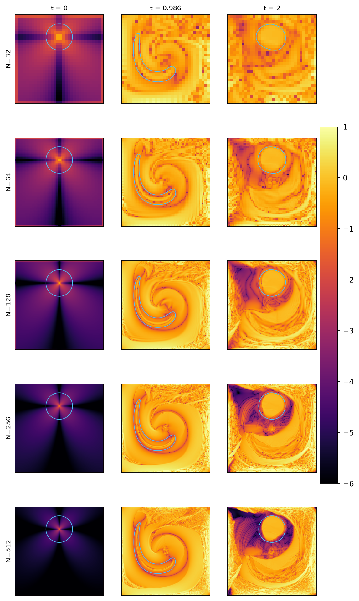
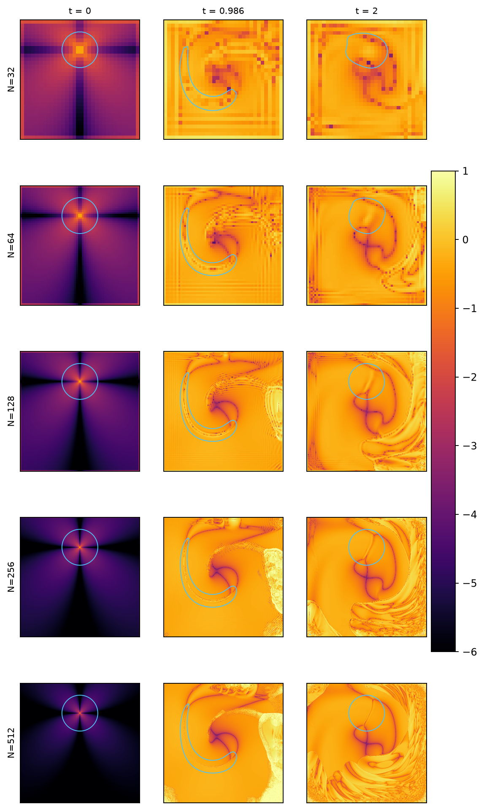
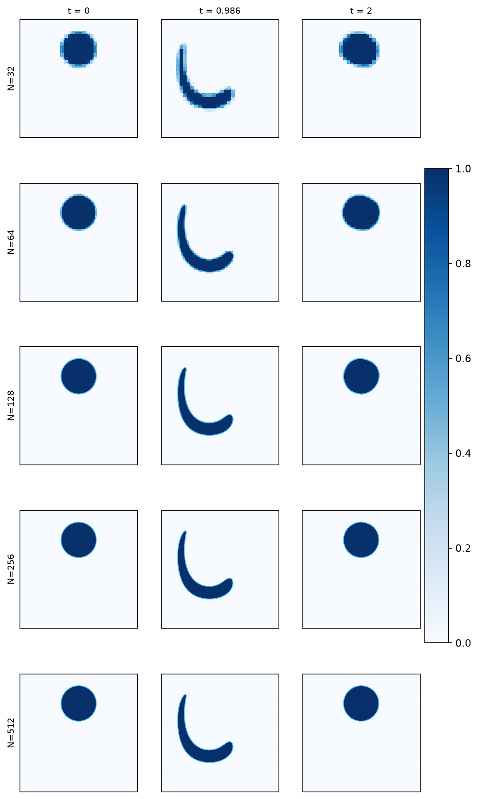
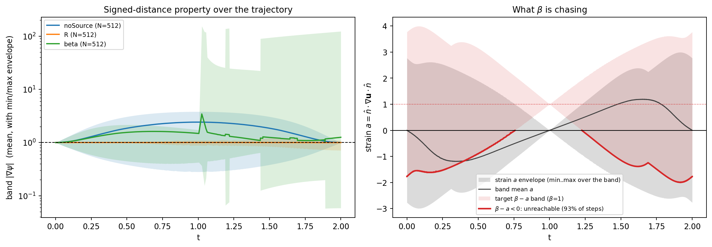
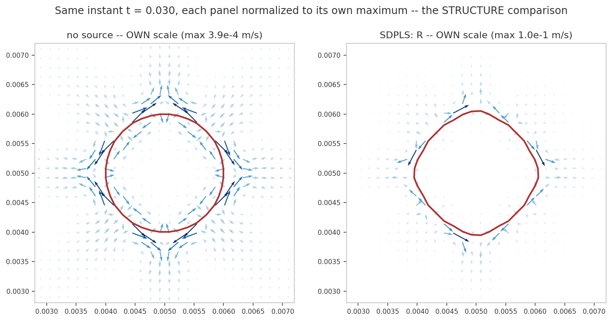

leia
An unstructured Finite-Volume Level Set Method in OpenFOAM
The SDPLS level set for two-phase flows
source-term control of the signed-distance property · zero interface displacement by construction · the method-decision benchmark
Tomislav Marić · Mathis Fricke · Dieter Bothe
MMA, TU Darmstadt
libleiaLevelSet | unified solver leiaLevelSetFoam
| companion deck: sdpls-level-set-negative-results.template.html
Roadmap
- 1The SDPLS source term — zero-set invariance, R and beta, discretization & stability
- 2Measured gradient control — band |∇ψ| trajectories, and which instant measures what
- 33D — and where the claim weakens
- 4Where the missing order is not — the 56-case gradient-scheme ablation
- 5Where the order is lost — the O(hp−1) estimate and its falsification tests
- 6A conservative implicit form (
Rdiv) — derivation, the measured outcome, and its withdrawal — now closed on a structural argument, not pending one - 7Why
betafails — it targets the wrong gradient - 8The method-decision benchmark — 32²–512², wall clock, field atlas
- 9Two-phase coupling — defect correction under
nOuterCorrectors - 10The drain is curvature-seeded — against an exact-curvature force the source does no harm at all: 0.000e+00, twelve of twelve cases
- 11Coupled: the negative result — mesh-locked mode-4 capillary
instability, the retraction of the
Rdivreading, the falsified diagonal-dominance hypothesis (RdivStrictSp), the retracted product-rule closeout, the operator-pair cause that replaces it (a difference of two upwind operators, positive off-diagonals), the λ-blend sweep that closesRdiv, time schemes, and the ∫ψ dV budget - 12Source variants & volume correction — exponential
integration measured on all three metrics, the new
exponentialImplicitmember that repairs its shape and volume cost, and the global Newton shift - 13Two coupled-patch defects —
fvc::grad(U)on processor patches and the raw extension flux; both fixed, both parallel-only, one published claim now disputed - 14Software design — one solver, one dictionary
Prerequisite material (the level set, the phase indicator, the narrow band) is shared with the SL and velocity-extension decks and is not repeated here.
Part 1 of 14
The SDPLS source term
- Transport with a source proportional to \(\psi\): \[ \partial_t\psi + \nabla\cdot(\mathbf{v}\psi) - \psi\nabla\cdot\mathbf{v} = f_{nl}(\psi^n)\,\psi \] S vanishes identically on the zero level set: the interface evolution is exactly untouched — no displacement, no volume change, ever.
- R: \(f_{nl} = (\hat{\mathbf{n}}\cdot\nabla\mathbf{u}\cdot\hat{\mathbf{n}})\) — cancels the normal-strain drift \(d\ln|\nabla\psi|/dt\) (SDPLS).
- beta: \(f_{nl} = \beta - |\nabla\psi|\) — relaxation to \(|\nabla\psi| = \beta\) (convected level set).
- Dedicated gradient keywords
gradPsiSdpls,gradUSdpls— decoupled from the advection scheme's limited gradient.
Discretization & measured stability (N=128, T=2)
\(S = f_{nl}(\psi^n)\psi^{n+1}\): Sc → explicit source, Sp → diagonal.
| discretization | split | R | beta |
|---|---|---|---|
| explicit | Sc = fψⁿ, Sp = 0 | stable (CFL 0.1–1) | DIVERGES at all CFL |
| simpleLinearImplicit | Sp = f (any sign) | stable | best accuracy measured: shape 4.5e-5, vol 5e-4 |
| strictNegativeSpLinearImplicit | Sp = min(f,0), Sc = max(f,0)ψⁿ | stable, best volume (2.5e-3) | stable |
Reproduce: config/sdplsStability.yaml. beta+explicit is a
documented negative result (companion deck).
Part 2 of 14
Measured gradient control (non-reversing vortex)
- R holds band max\(|\nabla\psi|\) ≤ 1.36 through T=8 (5.5–7.4 without any source) — steepening controlled by the PDE itself.
- Flattening (band min \(\to\) 0) is NOT strain-driven: unchanged under R — filament under-resolution, a mesh limit every method shares.
- Redistancing that rewrites the interface cells is retired — measured story in the GRL negative-results deck; the SDPLS source replaces it with zero interface cost.
The measurement — non-reversing vortex, t = T
Band gradient error \(\|\,|\nabla\psi|-1\|_{L_2}\), 2D vortex,
oscillation off, T = 2, 7-rung ladder
(sdplsConv2Dvortex, 42 cases):
| N | 32 | 45 | 64 | 90 | 128 | 181 | 256 | order |
|---|---|---|---|---|---|---|---|---|
| no source | 1.600 | 2.048 | 2.415 | 2.720 | 2.860 | 2.839 | 2.778 | −0.26 |
R | 0.451 | 0.392 | 0.292 | 0.230 | 0.188 | 0.152 | 0.089 | +0.74 |
beta | 0.850 | 1.002 | 1.147 | 1.188 | 1.087 | 0.991 | 0.984 | −0.04 |
| volume error | 32 | 45 | 64 | 90 | 128 | 181 | 256 | order‡ |
| no source | 0.245 | 0.079 | 0.019 | 6.4e−3 | 3.8e−3 | 3.5e−3 | 2.3e−3 | +1.39 |
R | 0.138 | 9.6e−3 | 0.058 | 0.049 | 0.026 | 6.1e−3 | 4.8e−4 | +3.37 |
beta | 0.040 | 0.072 | 0.053 | 0.020 | 2.1e−3 | 2.8e−3 | 9.3e−5 | +4.22 |
Doing nothing diverges. Without a source the level set loses the signed-distance
property monotonically as the mesh is refined — band mean |∇ψ| goes
2.15 → 3.52 — because the vortex winds the interface into a filament
and nothing restores the gradient. Only R converges, and it is
31× more accurate than the baseline at N = 256.
It also conserves volume better from N = 128 up and converges faster
in volume (+3.37 vs +1.39).
‡Volume order fitted over N ≥ 64. At N = 32 the sourceless baseline itself loses 24.5% of the phase volume: the filament is under-resolved, and a run that has lost a quarter of its volume is not a convergence data point whatever its gradient error reads. Shape error is not reported here and cannot be — it is defined at t = T against the initial condition, which exists only if the flow returns the interface to its starting position. Volume error is the interface-integrity check on a non-reversing flow.
Which instant measures what
The cancellation corrupts one column, not the whole run.
The same case with oscillation on, at t = T:
| reversed, at t = T | 32 | 64 | 128 | 256 | 512 | order |
|---|---|---|---|---|---|---|
| no source | 0.122 | 0.072 | 0.012 | 0.0013 | 0.0001 | +2.63 |
R | 0.306 | 0.258 | 0.148 | 0.084 | 0.048 | +0.70 |
beta | 0.275 | 0.330 | 0.361 | 2.805 | 6.897 | −1.24 |
Read at face value this says the baseline is 477× better than R
and no source term is warranted. It is an artifact. The oscillating velocity carries a
\(\cos(\pi t/\tau)\) factor, so the interfacial stretching integrates to zero over the
period, \(\int_0^T a\,dt = 0\) with \(a = \mathbf{n}\cdot\nabla\mathbf{U}\cdot\mathbf{n}\).
A passively advected ψ is carried back to its initial signed-distance state, while
any source does work along the trajectory that the return leg does not undo.
The reversal rewards inaction, and it rewards it most where the most recoverable
error was accumulated.
Same case, same solver, same ladder — only the reversal removed — and the
ranking inverts: +2.63 → −0.26 for the baseline.
But the corruption is confined to this column, and the non-reversing run proves it.
Band gradient order, two independent configurations:
| reversed, t = T/2 | non-reversing, t = T | |
|---|---|---|
R | +1.228 | +0.74 |
| no source | −0.094 | −0.26 |
beta | +0.087 | −0.04 |
Agreement in sign and ranking on all three arms — against a reversed t = T column that disagrees with both. At t = T/2 the factor cos(πt/τ) has been positive throughout, so ∫a dt is at its maximum and nothing has cancelled. The protocol: gradient error at T/2, shape error at T (the only instant it is defined — the interface has returned), volume conservation at both. The t = T gradient column is suppressed in the generated tables, not left to the reader.
3D — and where the claim weakens
Both 3D cases on a 6-rung cell-doubling ladder (N = 64, 81, 102, 128, 161, 203 — each level doubles the cell count, 8.37M at the top), 72 cases, zero failures. Band gradient error order at t = T/2:
| 2D vortex | 3D shear | 3D LeVeque deformation | |
|---|---|---|---|
| no source | −0.26 | −0.094 | −0.914 |
R | +0.74 | +0.668 | −0.045 |
beta | −0.04 | +0.292 | −0.442 |
On deformation R does not converge. It holds the error flat
at 0.39–0.41 across the whole ladder while the baseline diverges 2.65 → 7.73,
ending 18.6× more accurate. That is boundedness, not convergence, and it is
a weaker claim than the other two cases support.
Volume conservation inverts between the two 3D cases. On shear R is
18× worse than doing nothing (order +0.96 vs +2.57); on deformation it is
13× better (+3.56 vs +1.26). Case-dependent, not systematic, and unexplained
by the present data. Shape error separates the arms hardly at all
(+1.07…+1.14 on deformation).
Caveat on every deformation number: the sourceless baseline still loses 11% of its phase volume at 203³ and 51% at 64³. At T = 3 the LeVeque field draws the interface into sheets thinner than the cell size across this entire ladder — these orders describe an under-resolved regime.
Where the missing order is not
R converges at +0.74 — short of the formal order
of the discretization. A 56-case ablation
(sdplsOrderAblation) swaps only the grad(psi)
reconstruction inside linearUpwind, everything else held fixed.
Band gradient error at t = T:
grad(psi) |
32 | 45 | 64 | 90 | 128 | 181 | 256 | order |
|---|---|---|---|---|---|---|---|---|
| cellLimited leastSquares (default) | 0.451 | 0.392 | 0.292 | 0.230 | 0.188 | 0.152 | 0.090 | 0.740 |
| cellLimited Gauss linear | 0.451 | 0.392 | 0.292 | 0.230 | 0.188 | 0.152 | 0.090 | 0.740 |
| leastSquares (unlimited) | 0.430 | 0.353 | 0.268 | 0.216 | 0.180 | 0.135 | 0.084 | 0.743 |
| faceLimited leastSquares | 0.559 | 0.423 | 0.311 | 0.247 | 0.199 | 0.182 | 0.136 | 0.658 |
- Not the limiter. Removing it entirely moves the order by 0.003. It buys ~5% accuracy at every rung and no order at all. The sourceless arm is equally indifferent (−0.255 → −0.240). Face limiting is the only variant that moves anything, and it is worse in both order and error.
- Not the time scheme. These runs use
CrankNicolson, second order — there is no first-order Euler cap to blame. - Still open, and two different things. Measurement: the band is the set of sign-change cells, so its physical width shrinks like O(h) and the norm is taken over a different region at every rung. Method: the cancellation is built from \(\mathbf{n}=\nabla\psi/|\nabla\psi|\), so the source cannot cancel the stretching more accurately than it can estimate it.
Full 7-rung ladder, all 56 cases at t = T. The default arm reproduces the +0.74 of the main ladder to three digits from an independently configured study. On a partial ladder (N ≤ 181) faceLimited read 0.753 and looked best — a missing-rung artifact, and the reason the completeness gate blanks unfinished rows rather than fitting through them.
Where the order is lost
Error estimate in the Jasak / Juretić framework: expand every discrete operator about the centroid, then separate what acts on the exact field from what acts on the solution error \(e=\psi_h-\psi\).
On uniform orthogonal hexes the gradient is second order for a smooth field: \((\nabla\phi)_h=\nabla\phi+C_2h^2\nabla^3\phi+O(h^3)\). Apply it to \(\psi_h=\psi+e\):
\(\delta\mathbf{g}=(\nabla\psi_h)_h-\nabla\psi =\underbrace{C_2h^2\nabla^3\psi}_{O(h^2)\ \text{truncation}} +\underbrace{(\nabla e)_h}_{O(h^{p-1})}\)
The two terms are not the same order. \(e\) is \(O(h^p)\) in magnitude but is not smooth on the scale \(h\) — it lives at cell centres and varies cell to cell at its own size — so \(|(\nabla e)_h|\sim|e|/h=O(h^{p-1})\). With second-order transport \((p=2)\) that term is \(O(h)\) and it dominates.
Only the tangential part perturbs the normal, \(\delta\mathbf{n}=(\mathbf{I}-\mathbf{n}\otimes\mathbf{n})\cdot\delta\mathbf{g}/|\nabla\psi|\), so \(\delta a = 2\,\mathbf{n}\cdot\nabla\mathbf{v}\cdot\delta\mathbf{n} + \mathbf{n}\cdot\delta(\nabla\mathbf{v})\cdot\mathbf{n}=O(h^{p-1})+O(h^2)\), and since \(D(\ln g)/Dt=a_h-a=\delta a\):
\(\bigl\||\nabla\psi|-1\bigr\| = \Bigl\|\int_0^T\delta a\,dt\Bigr\| = O(h^{p-1}) = O(h)\)
The estimate is falsifiable — and the data test it
At \(t=0\) the discrete field is the sampled exact signed distance, so \(e=0\) identically: the error-field term vanishes and only the \(O(h^2)\) truncation survives. Prediction: order 2 before the first step, falling to 1 the moment transport creates \(e\) — immediately, not gradually.
| \(t/T\) | 0 | 0.02 | 0.05 | 0.10 | 0.25 | 0.50 |
|---|---|---|---|---|---|---|
| 2D reversed vortex | +2.010 | +1.071 | +1.108 | +1.195 | +1.323 | +1.227 |
| 3D shear | +2.006 | +1.122 | +1.143 | +1.301 | +0.896 | +0.668 |
Exactly 2 before the first step; \(\approx\)1.1 within 2% of the period. That is the predicted collapse, and it is not what a slowly growing \(\nabla^3\psi\) would look like. The later decay on 3D shear is the separate under-resolution effect — where the interface nears the cell size the expansion has no validity, and \(L_\infty\) degrades faster than \(L_1\) (+0.27 vs +0.72 at \(T/2\)).
The estimate bounds the GRADIENT error only. \(\delta a\) drives \(D(\ln g)/Dt\), so it governs \(|\nabla\psi|-1\). Shape and volume are properties of the zero level set, limited by an interface displacement of \(e/|\nabla\psi| = O(h^p)\) rather than a strain error of \(O(h^{p-1})\). They do not share an order — and the three do not move together:
| case | source | gradient (T/2) | volume (T/2) | volume (T) | shape (T) |
|---|---|---|---|---|---|
| 2D vortex | none | −0.094 | +1.724 | +2.725 | +1.531 |
| 2D vortex | R | +1.228 | +2.913 | +1.984 | +1.630 |
| 3D shear | none | −0.094 | +2.224 | +2.574 | +2.213 |
| 3D shear | R | +0.668 | +1.773 | +0.956 | +1.347 |
Shape and volume sit at 1.3–2.9, above the gradient orders — exactly the \(O(h^p)\) vs \(O(h^{p-1})\) split. On 2D the source is free (divergent \(\to\) +1.23, shape and volume unharmed); on 3D shear it is not (volume +2.57 → +0.96, shape +2.21 → +1.35). Quoting the gradient order alone overstates the method on one case and hides its cost on the other.
- The gradient scheme cannot help. It changes \(C_2\), not the exponent in \((\nabla e)_h\). Measured: compact LSQ +1.256, point-cell LSQ +1.254, Green–Gauss +1.253.
- Second order in the gradient needs \(p=3\) — third-order transport, not a rearranged source.
- The one escape — measured, and it closes. The Detrixhe–Aslam indicator already fits an LLSQ plane per band cell to build \(\alpha\); registering that fitted normal and using it as the source's \(\mathbf{n}\) (single-variable: \(\alpha\) unchanged) gives band order +1.19 vs +1.25, absolute error 40% larger, shape +2.21 → +1.61. A per-cell fit is less smooth tangentially than the gradient it replaces — and the tangential part drives \(\delta a\). Within second-order transport, ≈1.2 is the ceiling.
The source is exactly a surface divergence
Two identities, both exact, neither an approximation.
(i) The surface gradient of \(\psi\) vanishes. With \(\mathbf{n}=\nabla\psi/|\nabla\psi|\),
\(\nabla_{\!s}\psi=(\mathbf{I}-\mathbf{n}\otimes\mathbf{n})\cdot\nabla\psi =\nabla\psi-\mathbf{n}\,(\mathbf{n}\cdot\nabla\psi) =\nabla\psi-\mathbf{n}\,|\nabla\psi| = 0.\)
(ii) The strain is the compressive part of the surface divergence. Since \((\mathbf{n}\otimes\mathbf{n}):\nabla\mathbf{v}=a\),
\(a=\mathbf{n}\cdot\nabla\mathbf{v}\cdot\mathbf{n} =\nabla\cdot\mathbf{v}-\nabla_{\!s}\cdot\mathbf{v} \;\;\xrightarrow{\ \nabla\cdot\mathbf{v}=0\ }\;\; a=-\nabla_{\!s}\cdot\mathbf{v},\)
which is the rate of interfacial area generation the SDPLS preprint describes. Combining, and using (i) to kill the \(\mathbf{v}\cdot\nabla_{\!s}\psi\) term:
\(S=a\,\psi=-\psi\,\nabla_{\!s}\cdot\mathbf{v} =-\nabla_{\!s}\cdot(\psi\,\mathbf{v}).\)
The algebraic source is a surface divergence — so it can be discretised as a flux, conservatively and implicitly, instead of as a lagged coefficient on \(\psi\).
Projection of the volumetric gradient, plus a remainder
\(\nabla_{\!s}\cdot\) is the volumetric divergence minus its normal–normal projection, \(\nabla_{\!s}\cdot\mathbf{X} =\nabla\cdot\mathbf{X}-\mathbf{n}\cdot\nabla\mathbf{X}\cdot\mathbf{n}\). Expanding the remainder on \(\mathbf{X}=\psi\mathbf{v}\):
\(\mathbf{n}\cdot\nabla(\psi\mathbf{v})\cdot\mathbf{n} =(\mathbf{n}\cdot\mathbf{v})(\mathbf{n}\cdot\nabla\psi)+\psi\,a =\underbrace{(\mathbf{n}\cdot\mathbf{v})\,|\nabla\psi|}_{=\;\mathbf{w}\cdot\nabla\psi}+\;\psi\,a, \qquad \mathbf{w}\equiv(\mathbf{n}\cdot\mathbf{v})\,\mathbf{n}.\)
The first piece is an advection along the normal velocity \(\mathbf{w}\), so \(\mathbf{w}\cdot\nabla\psi=\nabla\cdot(\mathbf{w}\psi)-\psi\,\nabla\cdot\mathbf{w}\) — a divergence again. Substituting into \(\partial_t\psi+\nabla\cdot(\mathbf{v}\psi)+\nabla_{\!s}\cdot(\psi\mathbf{v})=0\):
\(\partial_t\psi \;+\; 2\,\nabla\cdot(\mathbf{v}\psi)\;-\;\nabla\cdot(\mathbf{w}\psi) \;+\;\psi\,\bigl(\nabla\cdot\mathbf{w}-a\bigr)\;=\;0\)
| term | OpenFOAM | character |
|---|---|---|
| \(\partial_t\psi\) | fvm::ddt(psi) | implicit |
| \(2\nabla\cdot(\mathbf{v}\psi)\) | 2*fvm::div(phi, psi) | implicit, conservative |
| \(-\nabla\cdot(\mathbf{w}\psi)\) | -fvm::div(phiN, psi) | implicit, conservative |
| \(\psi(\nabla\cdot\mathbf{w}-a)\) | fvm::Sp(divW - a, psi) | implicit diagonal |
Only \(\mathbf{n}\) is lagged, exactly as now
(measured converged: nDefCorr 3 → 10 changes the band error
by <0.4%). Sanity check — uniform translation of a plane, \(a=0\),
\(\mathbf{w}\) constant, \(|\nabla\psi|=1\): the form collapses to
\(\partial_t\psi+\mathbf{v}\cdot\mathbf{n}=0\), pure advection.
What this would and would not buy — a proposal, not a result
The case for it. R's measured weakness is not the gradient — it is conservation. On 3D shear, volume order +0.96 against the sourceless +2.57, and the signed volume error oscillates rather than accumulating. A flux form is conservative by construction, which is the right instrument for exactly that defect.
It also removes the algebraic source entirely: the discrete interface displacement we traced to the variation of \(a\) across the two cells straddling \(\psi=0\) no longer has that form.
The risk, and it is the thing to test first. Today \(S\propto\psi\) guarantees zero interface displacement pointwise — the source cannot move the interface because it vanishes identically at \(\psi=0\). In flux form the property survives analytically (\(\nabla_{\!s}\cdot(\psi\mathbf{v})=\psi\,\nabla_{\!s}\cdot\mathbf{v}\to0\)) but not cell by cell: discrete fluxes into an interface cell need not cancel. We may be trading guaranteed-zero displacement for guaranteed conservation.
The \(2\nabla\cdot(\mathbf{v}\psi)-\nabla\cdot(\mathbf{w}\psi)\) pair is also cancellation-prone: two fluxes of similar magnitude with opposite sign.
It will not fix the order. \(\psi\) converges at \(\approx1.7\) (2D) while the band gradient error converges at \(+1.23\): differentiating a numerical solution costs one order, so a gradient metric near first order is what second-order transport looks like. Second order in the gradient needs third-order transport, not a rearranged source. Judge this reformulation on volume and shape.
Measured outcome (Part 11). The flux form Rdiv was built and run.
It diverges under mesh refinement on a prescribed divergence-free velocity — band
gradient order −3.800, shape −1.306, volume −1.544, with every run
completing. Judged on volume and shape as this slide asks, it fails both, and the gradient too.
The 3D shear ladder agrees: band gradient −3.383 at T/2, shape −2.571 and
volume −3.381 at T. Of the two candidates named for why — the
cancellation-prone flux pair flagged above, and the unrestricted-sign Sp
coefficient — the second has now been tested by a sign-split variant
(RdivStrictSp) and falsified: −3.554 against −3.800.
Superseded, and quoted so the change is visible: this box previously ended
“The flux pair remains live. Rdiv is therefore withdrawn pending an
explanation.” The explanation has since been measured (Part 11). The flux pair
is the seat of the defect — but not through cancellation between two nearly equal
magnitudes, which was the reason given here. fvMatrix::operator== subtracts the
source term by term, so the assembled matrix is a difference of two upwind convection
operators: on any face where \(\mathrm{sign}(\phi_f)\ne\mathrm{sign}(\phi_{\mathbf{w},f})\)
the composite off-diagonal is \(+|\phi_{\mathbf{w},f}|\), strictly positive, and the discrete
maximum principle is gone. Rdiv is therefore withdrawn on a
structural argument rather than pending one, and is not offered as an option of the
method.
Why beta fails — it targets the wrong gradient
Differentiate the level-set equation along the interface. With \(g=|\nabla\psi|\) and \(a=\mathbf{n}\cdot\nabla\mathbf{U}\cdot\mathbf{n}\) the interfacial stretching, the source \(f_{nl}\) obeys
\(\dfrac{Dg}{Dt} = g\,(f_{nl}-a)\)
| source | gradient law | where it drives \(g\) | |
|---|---|---|---|
R | \(f_{nl}=a\) | \(Dg/Dt = 0\) | nowhere — \(g\) is left at 1, exactly |
beta | \(f_{nl}=\beta-g\) | \(Dg/Dt = g\,(\beta-g-a)\) | to \(g^{*}=\beta-a\) |
\(g^{*}=\beta-a\) is a target set by the flow, not by the signed-distance
condition. It equals the value we actually want, \(g=1\), only where
\(\beta = 1+a\). But \(a\) varies over the interface and over time, so
no constant \(\beta\) is correct anywhere except by coincidence — and where
it is wrong, the source is actively driving the level set away from a signed distance.
R escapes this by using the local strain itself as the source, which cancels
the stretching term identically instead of competing with it.
Measured, on the non-reversing vortex
Band mean |∇ψ| at t = T against the predicted target \(\beta-a\), with \(\beta=1\) and \(a\) measured per step from the registered strain field:
| N | 32 | 45 | 64 | 90 | 128 | 181 | 256 |
|---|---|---|---|---|---|---|---|
| measured \(g\) | 1.600 | 1.851 | 2.023 | 2.080 | 2.001 | 1.922 | 1.927 |
| predicted \(\beta-a\) | 1.820 | 1.790 | 1.804 | 1.836 | 1.841 | 1.872 | 1.866 |
| error | 12.1% | 3.4% | 12.1% | 13.3% | 8.7% | 2.7% | 3.3% |
R control |
0.953 | 0.995 | 1.041 | 1.075 | 1.109 | 1.073 | 1.021 |
beta converges — to 1.87. It is not unstable here and it is not
under-resolved; it is accurately solving for the wrong target, which is why its band
gradient error saturates near 0.98 and its order is −0.04: refinement cannot
remove an error the equation is asking for. The R control on the same flow,
with the same strain, holds \(g\) at 1.02.
Confirmed independently by a 28-case β sweep
(sdplsBetaSweep, β ∈ {0.5, 1.0, 1.5, 2.0}): the band mean shifts
one-for-one with β, measured slope
d g /dβ = 0.938 against a predicted 1. Nothing about the
target is a mesh effect.
And where \(\beta-a<0\) the target is negative. The source then drives \(g\rightarrow 0\), but \(g=0\) is the unstable fixed point of the logistic law above, so those cells blow up as soon as the strain changes sign — band max |∇ψ| reaching 154.9. Flattening and blow-up are one mechanism, not two.
Part 8 of 14
The method-decision benchmark
config/benchVortex*.yaml (Euler+SDPLS / SL / VE lines,
T ∈ {2, 8}, N up to 512²): convergence panels at t = T and t = T/2 (volume +
gradient only at maximal stretching), cost-vs-accuracy (wall clock), decision table,
and the field atlas (α, ψ, ||∇ψ|−1| montages 32²–512²)
from make_method_comparison.py + make_bench_fields_fig.py.


Where the error lives
Signed-distance error log10||∇ψ|−1|,
2D reversed vortex, T = 2, simpleLinearImplicit.
Rows N = 32…512; columns t = 0,
T/2 (maximal deformation), T (flow reversed).
Blue curve is the ψ = 0 contour.
From the retired reversed benchmark — kept because it shows
where the error lives and how the beta blow-up starts, which is a
mechanism, not an accuracy claim. No convergence order on this slide is published.

R — strain-cancelling
beta
R: the error collapses over a growing neighbourhood of the recovered
interface as the mesh refines, and the t = T contour closes on
a clean circle. beta: the bulk error stays O(1) at every resolution
and the recovered contour carries extra internal structure — the signature of a
flattening level set, since the interface position error scales like
eψ/|∇ψ|. The same statement as the band minimum
(0.423 vs 0.883 at N = 512), seen in space rather than as one number.
… and it is not interface displacement
Volume fraction α, same cases and layout. The graded fill shows the width of the indicator transition region directly.

Rbeta
Neither source thickens the transition region appreciably relative to the other, and the
volume and shape errors agree: whatever beta does to the signed-distance
property, it does not do it by displacing the interface.
Caveat: the atlas differentiates ψ with a uniform-grid finite difference for
visualization, not with the gradPsiMetric operator behind the tabulated
norms — it localizes the error, the tables measure it.
What two instants cannot show

The tables report t = T/2 and T — enough to fit an order, not enough to see a mechanism. Band maximum |∇ψ| over the trajectory:
- no source → peaks 3.81, ends 1.000
R→ peaks 1.23, ends 1.105beta→ peaks 154.9, still 123.5 at t = T
The band mean at t = T is 1.256: the blow-up is a few cells, and the mean never reveals it.
It starts at t ≈ 1.03, right after the flow
reverses, and the gradient law says why. Where a > β the
source drives g → 0; but g = 0 is an
unstable fixed point of
Dg/Dt = g(β−g−a) once the strain flips sign and
β−a > 0, so the flattened cells grow exponentially.
Flattening and blow-up are the same mechanism, seen on either side of the reversal. The target β−a is negative somewhere in the band for 93% of the time steps.
And refinement triggers it. Band max |∇ψ| at t = T:
1.68, 1.51, 1.62, 50.9, 123.5 for
N = 32…512. Absent at N ≤ 128, appears
between 128 and 256. beta is acceptable on coarse meshes and fails on fine
ones — the opposite of convergence, and invisible if you only run the coarse end
of a ladder. Over the same range R tightens monotonically
(1.40→1.11) and no source converges to 1.0003.
Both strain curves pinch at t = T/2: the oscillating vortex is momentarily at rest, so the instantaneous strain must not be read there.
Part 9 of 14
Two-phase coupling
- \(\psi\) equation upgraded to the advective form + SDPLS source in
leiaLevelSetTwoPhaseFoam; re-assembled every PIMPLE outer corrector —nOuterCorrectorsIS the linearUpwind defect-correction control (verified: 2 steps × 3 correctors = 6 ψ solves). - Interface updates (band, redistancing criterion, volume fraction) once per time step, on the final corrector — the interface is not repeatedly displaced while momentum and pressure iterate.
Part 10 of 14
The coupled drain is seeded entirely by curvature error
One variable is changed: the surface-tension force. Everything else is held
fixed — solver leiaLevelSetTwoPhaseFoam, 2D stationary droplet of radius
\(R=10^{-3}\,\mathrm{m}\) (water) in a \(0.01\,\mathrm{m}\) box of air, np = 8,
\(t_{\mathrm{end}}=0.1\,\mathrm{s}\), same source, same discretization, same time step.
Study sdplsDropletMechanism2D, 24 cases, all complete. Metric: the relative
signed phase-volume error
\(E_V=\bigl(V_{\{\psi<0\}}(t)-V_{\{\psi<0\}}(0)\bigr)\big/V_{\{\psi<0\}}(0)\),
read at \(t=0.1\) or at the instant the run diverges.
| surface-tension force | source | ddt(ψ) | N = 32 | 64 | 128 |
|---|---|---|---|---|---|
constantCurvatureSurfaceTensionκ = 1/R = 1000 1/m, exact for a circle |
none | Euler | 0.000e+00 | 0.000e+00 | 0.000e+00 |
| none | CrankNicolson | 0.000e+00 | 0.000e+00 | 0.000e+00 | |
| R | Euler | 0.000e+00 | 0.000e+00 | 0.000e+00 | |
| R | CrankNicolson | 0.000e+00 | 0.000e+00 | 0.000e+00 | |
reconstructedCurvatureproduction κ, reconstructed from the discrete ψ |
none | Euler | 2.810e−03 | 1.843e−04 | 1.204e−05 |
| none | CrankNicolson | 2.829e−03 | 1.867e−04 | 7.647e−06 | |
| R | Euler | −1.000 | +27.7 diverged t=0.0584 | +19.3 diverged t=0.0398 | |
| R | CrankNicolson | −0.949 | +26.2 diverged t=0.0456 | diverged t=0.0304 | |
Twelve of twelve exact-curvature cases read 0.000e+00 — in the volume error and in the geometric (shape) error — and every one of them runs the full \(t=0.1\). With the curvature error removed, the SDPLS source does not drain the droplet at all. With the production curvature the same source destroys it at N = 32 and diverges at N = 64 and 128. The feedback loop has no other seed.
Stated rather than skipped: this study reports volume and shape (geometric)
error. Band gradient error was not measured in
sdplsDropletMechanism2D — the gradient evidence for the source is on the
kinematic ladders of Parts 2–5, and is not claimed here.
Why the exact-curvature force has a machine-zero spurious current
The CSF face force delivered to the pressure equation is \(\mathbf{f}_\sigma\cdot\mathbf{S}_f=\sigma\,\kappa\,\bigl(\nabla\alpha\cdot\mathbf{S}_f\bigr) =\sigma\,\kappa\,\mathrm{snGrad}(\alpha)\,|\mathbf{S}_f|\). With \(\kappa\) constant over the mesh this is \(\sigma\kappa\) times a discrete gradient of \(\alpha\) — that is, it is itself an exact discrete gradient, of the scalar field \(\sigma\kappa\alpha\), taken on the same face-normal stencil the pressure equation uses. The PISO pressure equation can therefore absorb it into \(p_{rgh}\) exactly, and the velocity it leaves behind is zero to round-off. With a \(\kappa\) that is reconstructed per cell and varies from face to face, the product is not the discrete gradient of any scalar, and the unabsorbable remainder appears as a spurious current.
Seed quality, measured at N = 32:
| diagnostic (maximum over the run) | exact κ | production κ |
|---|---|---|
| interface Courant number | 9.1e−11 | not reported here |
| capillary-pressure velocity residual from rAU/rAUf | 3.0e−09 m/s | not reported here |
| non-absorbable capillary flux fraction \(\max|R_f|\big/\max|\phi_g|\) | 6.5e−11 | 1.7e−05 |
\(\phi_g\) is the capillary face flux handed to the pressure equation and \(R_f\) is the part of it that the pressure equation cannot represent as a discrete gradient — the residual that necessarily becomes velocity. The exact-curvature delivery leaves 2.6×105 times less non-absorbable flux than the production delivery. An interface Courant number of 9.1e−11 means the interface does not move over the whole run: the source is being asked to cancel a normal strain \(a=\mathbf{n}\cdot\nabla\mathbf{u}\cdot\mathbf{n}\) that is itself machine zero, and it does exactly that — it neither helps nor harms.
What this proves — and the scope limit that comes with it
Established. The amplification loop \(\psi\rightarrow\kappa\rightarrow\mathbf{f}_\sigma\rightarrow\mathbf{u}\rightarrow a\rightarrow\psi\) requires the curvature-error seed. Remove the seed and the source is harmless at every resolution and under both time schemes tested. The competing hypothesis — that the failure is intrinsic to a strain-cancelling source under two-way coupling — is dead: it predicts a drain in this configuration, and the measurement is 0.000e+00 twelve times over.
This also relocates the defect. It is in the surface-tension force, specifically in the curvature it reconstructs from \(\psi\); it is not in the ψ equation, not in the source's discretization, and not in the existence of the coupling loop as such.
Scope limit — this is a degenerate configuration. With \(\kappa\) pinned to a constant, the velocity is \(\sim10^{-11}\,\)m/s and the interface never moves. The measurement proves the loop requires the seed. It does not show that R behaves well against an accurate but imperfect force, because no such force was run here. It says the fix belongs in the force; it does not say that any particular force works.
And better static balance is not
automatically that fix. The Abu-Al-Saud–Popinet–Tchelepi integral
surface-tension force is already implemented here as
src/leiaLevelSet/surfaceTensionForce/integralSurfaceTension, and it is
measured dynamically unstable on the N = 64 lab-frame
translating capillary gate: first-step
\(\max|\mathbf{U}-\mathbf{U}_{\mathrm{trans}}|\) = 1.003e−2 m/s and a
floating-point exception at \(t=9.33\times10^{-4}\,\)s, against 1.09e−8 m/s for the
exact-curvature control, which reaches \(t=0.05\).
Better static balance can coexist with larger dynamic feedback gain.
M. Abu-Al-Saud, S. Popinet, H. Tchelepi, J. Comput. Phys. 371 (2018) 896–913.
Part 11 of 14
With the production curvature, the source destroys the droplet
Same 2D stationary droplet, same solver, production
reconstructedCurvature force in every arm. The exact solution is
\(\mathbf{u}=\mathbf{0}\) with the Laplace pressure jump — every velocity is
error. Relative signed phase-volume error at \(t=0.1\), or at the instant of divergence;
ddt(psi) Euler, momentum Euler.
| N | no source | R (algebraic) | Rdiv (conservative)† |
|---|---|---|---|
| 32 | +2.810e−03 | −1.000 | −9.795e−03 |
| 64 | +1.843e−04 | +27.7 diverged t=0.0584 | +17.8 diverged t=0.0649 |
| 128 | +1.204e−05 | +19.3 diverged t=0.0398 | crashed t=0.0288 |
−1.000 means the droplet is gone. The sourceless arm converges cleanly, 2.810e−03 → 1.204e−05 over a 4× refinement, and its currents decay — so the CSF discretization and the pressure–velocity coupling are sound at these resolutions and the source is the defect. Part 10 identifies what the source is amplifying: replace the reconstructed curvature with the exact \(\kappa=1/R\) and this whole table becomes 0.000e+00.
†The Rdiv column is retracted as evidence about the
coupled loop — next slide. The numbers stand; the reading does not. They also
supersede an earlier reading of this column (a “steady drain” to −1.0 at
N = 64): the completed study sdplsRdivDroplet2D measures
divergence there at \(t=0.0649\).
Standing correction to the derivation slides (Part 6). I argued that a flux form “cannot drain” the droplet. That is wrong: conservative fluxes conserve \(\int\psi\,\mathrm{d}V\), not the volume of \(\{\psi<0\}\). \(\psi\) can be conserved globally while its zero contour shrinks — and the budget slide at the end of this part now measures both invariants simultaneously and finds them four orders of magnitude apart.
RETRACTED — the Rdiv reading of the coupled result
| What was claimed | Rdiv — the conservative (divergence-form) rewrite of the source derived in Part 6, presented there as the reformulation that should remove the drain structurally — was reported on this slide as a coupled-mechanism result: “rescues N=32, drains N=64, diverges at N=128, therefore not a fix”. The implied premise is that its coupled behaviour is about the capillary coupling. |
| What is now measured | Rdiv diverges under mesh refinement on
a prescribed, divergence-free velocity field — no capillary force, no curvature,
no momentum equation, and no return path from \(\psi\) to \(\mathbf{u}\) of any kind.
2D reversed vortex, sdplsRdivConv2Dvortex: band gradient order
−3.800 at t = T/2, shape order
−1.306 and volume order −1.544 at
t = T. Every run completed. |
| Corrected reading | The coupled Rdiv behaviour is explained by a defect in the discrete operator itself, and requires no appeal to the capillary feedback loop at all. It is therefore not evidence for, or against, any statement about two-way coupling. It is also not evidence that conservative reformulation fails to help the coupled problem: that question is untested, because the flux operator that would test it is broken already in the kinematic limit. |
What survives from the old slide: the numbers themselves, and the statement that Rdiv as currently discretised is not a usable method. What does not survive: the inference from those numbers to the coupled mechanism. The R column is unaffected — R is independently validated on the same kinematic ladder, same flow, same seven rungs (band gradient order +1.112), so its coupled failure genuinely is a coupled result.
Recorded here rather than deleted, next to the standing correction on the previous slide (“a flux form cannot drain”), which an earlier measurement falsified in the same way. House rule: retractions live where the claim was made.
The kinematic evidence — Rdiv diverges with no coupling present
2D reversed vortex, \(T=2\), oscillation on, CFL 0.5,
np = 4, solver leiaLevelSetFoam with a prescribed divergence-free
velocity: there is no capillary feedback loop of any kind. Band gradient error
\(\bigl\|\,|\nabla\psi|-1\,\bigr\|_{L_2}\) at t = T/2, per
protocol:
| N | 32 | 45 | 64 | 90 | 128 | 181 | 256 | order |
|---|---|---|---|---|---|---|---|---|
| no source | 1.222 | 1.529 | 1.637 | 1.666 | 1.675 | 1.663 | 1.673 | −0.116 |
| R | 0.344 | 0.240 | 0.172 | 0.135 | 0.0958 | 0.0536 | 0.0309 | +1.112 |
| Rdiv | 0.391 | 0.256 | 1.564 | 8.002 | 20.48 | 103.3 | 668.9 | −3.800 |
All three metrics agree, and they agree in direction. Shape order at t = T: no source +2.134, R +1.883, Rdiv −1.306. Volume order at t = T: +2.733, +2.090, −1.544. At N = 256 Rdiv's relative volume error reaches 1.36 — 136% of the initial phase volume.
These are not crashes. The
solverFailed column is blank for every rung of every arm: the linear solves
converge and the runs finish. They are converged solutions of the discrete system that are
wrong, and that get monotonically worse as the mesh is refined — 0.391 at
N = 32 to 668.9 at N = 256, a factor of 1710 across an
8× refinement. A crash would be a stability limit; this is a consistency failure.
Why this had never been seen. Rdiv had never been run
kinematically at all. The case templates
cases/{2Dvortex,3Dshear,3Ddeformation}/system/fvSchemes.template carried no
div(phiW,psi) entry, so fvm::div(phiW, psi) aborted at the first
step. The operator was unrunnable, not merely untested — and every
Rdiv number published so far came from the coupled solver, whose
fvSchemes did carry the entry. The 3D shear ladder has since completed and
agrees in every metric: band gradient order −3.383 at
t = T/2, shape −2.571 and volume
−3.381 at t = T. The divergence is not a
two-dimensional artefact.
A hypothesis for the Rdiv defect — and what would falsify it
The flux form assembled in Part 6 is
\(\partial_t\psi+2\,\nabla\cdot(\mathbf{v}\psi)-\nabla\cdot(\mathbf{w}\psi) +\psi\,\bigl(\nabla\cdot\mathbf{w}-a\bigr)=0,\qquad \mathbf{w}=(\mathbf{n}\cdot\mathbf{v})\,\mathbf{n}.\)
HYPOTHESIS — stated as one, not measured. The last term is
assembled as fvm::Sp(divW - a, psi), an implicit diagonal contribution whose
coefficient \(\nabla\cdot\mathbf{w}-a\) has no definite sign. Every stable
discretization of the algebraic source restricts the implicit part to a
non-positive coefficient — strictNegativeSpLinearImplicit uses
\(S_p=\min(f_{nl},0)\) and \(S_c=\max(f_{nl},0)\,\psi^n\), moving the positive part to the
right-hand side — and the flux form has no analogue: applying the same
restriction would destroy the conservation property that motivated it. Where
\(\nabla\cdot\mathbf{w}-a<0\) the term removes diagonal dominance from the matrix
rather than adding to it. Two further amplifiers, both refinement-dependent:
\(\nabla\cdot\mathbf{w}\) contains second derivatives of \(\psi\) through
\(\mathbf{n}=\nabla\psi/|\nabla\psi|\), so its noise grows as the mesh is refined; and the
pair \(2\nabla\cdot(\mathbf{v}\psi)-\nabla\cdot(\mathbf{w}\psi)\) is cancellation-prone, two
fluxes of similar magnitude and opposite sign — a risk flagged on the derivation slide
before any of this had been run.
The hypothesis predicts a defect that worsens under
refinement while every linear solve converges, which is exactly the ladder's signature.
The test that decides it: a sign-restricted variant of the Sp term on the same
seven rungs. If the divergence survives the restriction the hypothesis is wrong, and the
cancellation-prone flux pair becomes the next candidate.
That test has since been run, the divergence survived it, and the hypothesis
stated on this slide is FALSIFIED — next slide. The statement of the hypothesis is
kept exactly as it was made, before the measurement, so that the prediction and its refutation
can be read against each other; the only sentence removed is
“It is untested”.
Null-test caveat on the coupled Rdiv control. In
sdplsRdivDroplet2D, Rdiv against the exact-curvature
force gives 0.000e+00 at N = 32, 64 and 128, for both Euler and backward,
all full runs. That is a null test and must be labelled as one. With the exact-curvature
force the velocity is \(\sim10^{-11}\,\)m/s, so
\(\mathbf{w}=(\mathbf{n}\cdot\mathbf{u})\mathbf{n}\approx\mathbf{0}\), the flux
\(\phi_{\mathbf{w}}\approx0\), and the entire Rdiv operator is
\(\approx0\). It shows that the drain needs the curvature seed; it cannot validate the
discretization, because the operator is never exercised. The same caveat applies to the
R arm of Part 10 — the difference is that R
is independently validated on the kinematic ladder (+1.112) and
Rdiv fails there.
The sign-split test — the diagonal-dominance hypothesis is FALSIFIED
The variant type RdivStrictSp was implemented and run. It changes
one term of the operator: with \(f=a-\nabla\cdot\mathbf{w}\) — the coefficient
written \(\nabla\cdot\mathbf{w}-a\) on the previous slide, with the sign of the term absorbed
into \(f\), so that the fully implicit delivery reads
+ fvm::Sp(f, psi) \(\;=+f\,\psi^{n+1}\) — the single implicit coefficient is
replaced by the split of Patankar (1980), the same one
strictNegativeSpLinearImplicit applies to the algebraic source,
+ fvm::Su(max(f,0)*psi.oldTime(), psi) + fvm::Sp(min(f,0), psi)
so the implicit branch contributes \(\min(f,0)\le0\) and can only add
to the system diagonal, never subtract from it, in every cell at every step on every mesh.
Nothing is dropped — the positive branch is delivered in full, at time level \(n\).
The two fvm::div flux terms are left untouched, same fluxes and same
fvSchemes entries, so the experiment varies the treatment of the algebraic
coefficient and nothing else. Study sdplsRdivStrictSpConv2Dvortex: the same
reversed 2D vortex, the same seven rungs, all three arms fitted on identical rungs. Band
gradient error \(\bigl\|\,|\nabla\psi|-1\,\bigr\|_{L_2}\) at
t = T/2:
| N | 32 | 45 | 64 | 90 | 128 | 181 | 256 | order |
|---|---|---|---|---|---|---|---|---|
| R | 0.344 | 0.240 | 0.172 | 0.135 | 0.0958 | 0.0536 | 0.0309 | +1.112 |
| Rdiv | 0.391 | 0.256 | 1.56 | 8.00 | 20.5 | 103 | 669 | −3.800 |
| RdivStrictSp | 0.392 | 0.280 | 2.66 | 6.05 | 15.1 | 56.3 | 635 | −3.554 |
All three metrics, per protocol. Shape order at t = T: R +1.883, Rdiv −1.306, RdivStrictSp −0.951. Volume order at t = T: +2.090, −1.544, −0.863. The sign split is marginally less bad on every one of the three metrics and still strongly divergent on every one of them. A repair that worked would have moved the order across zero, not by a quarter of an order.
The split demonstrably acted — which is what makes this null readable. The operator prints a branch census at every assembly, and at N = 32 it logs 512 of 1024 cells with \(f>0\): half the domain sat on the destabilising branch under Rdiv and no longer does under RdivStrictSp. Had that count been zero the two schemes would be algebraically identical (\(\min(f,0)=f\), \(\max(f,0)=0\)) and the run would have measured nothing at all — “the coefficient was already sign-safe” is a different statement from “the diagonal was not the defect”, and the census is what separates them. The M-matrix violation was removed, and the divergence barely moved: −3.554 against −3.800, 635 against 669 at the finest rung. Loss of diagonal dominance is not the mechanism.
What the falsification eliminates — and what it does not
RETRACTED — the product-rule closeout at the foot of this slide. Both suspects (i) and (ii) below have since been measured properly — at the first assembly, and in a fixed physical band — and both are bounded and second-order convergent: neither explains the divergence. The table below reads a \(\psi\) that a full period of transport has already polluted, and norms pinned by a fixed geometric singularity. Kept verbatim, as this project keeps its retractions; withdrawn on the next slide.
Scope, stated without overclaiming. The sign split redistributes the coefficient \(f=a-\nabla\cdot\mathbf{w}\) between explicit and implicit delivery. It does not reduce the noise in \(\nabla\cdot\mathbf{w}\) — the same field enters the matrix with the same discrete values, only through a different slot. What is eliminated is therefore the diagonal-dominance mechanism specifically: the claim that the operator diverges because an unsigned \(S_p\) drives the one-cell diagonal \(1/\Delta t-f\) through zero. Both previously named suspects remain live.
- (i) Second derivatives of \(\psi\) inside the coefficient.
\(\nabla\cdot\mathbf{w}\) is evaluated as
fvc::div(phiW)with \(\mathbf{w}=(\hat{\mathbf{n}}\cdot\mathbf{v})\hat{\mathbf{n}}\) and \(\hat{\mathbf{n}}=\nabla\psi/|\nabla\psi|\), so it contains \(\nabla\hat{\mathbf{n}}\) — second derivatives of \(\psi\), whose truncation noise grows as \(h\) shrinks. That is exactly the refinement dependence the ladder shows. - (ii) Cancellation between the two flux terms. The pair
\(2\nabla\cdot(\mathbf{v}\psi)-\nabla\cdot(\mathbf{w}\psi)\) differences two fluxes of
similar magnitude and opposite sign. Rdiv and R
are continuum-identical for a divergence-free \(\mathbf{v}\), so the only
structural difference between the arm that converges at +1.112 and the arm that diverges
at −3.800 is that Rdiv routes part of the operator through
fvm::divfluxes. The \(\psi\,\nabla\cdot\mathbf{w}\) content carried implicitly insidefvm::div(phiW, psi)is supposed to cancel against the \(S_p\) term, by the product rule \(\nabla\cdot(\mathbf{w}\psi)-\psi\,\nabla\cdot\mathbf{w}-\mathbf{w}\cdot\nabla\psi=0\). Discretely there is no guarantee that it does:fvm::div(phiW, psi)interpolates \(\psi\) to faces with thediv(phiW,psi)scheme whilefvc::div(phiW)is a plain flux divergence, and the two need not be consistent.
That probe has now run — and the identity fails. The operator prints, at every assembly, the product-rule residual \(r=\nabla\cdot(\mathbf{w}\psi)-\psi\,\nabla\cdot\mathbf{w}-\mathbf{w}\cdot\nabla\psi\) in \(L_\infty\) and \(L_2\), alongside the reference norm \(\|\nabla\cdot(\mathbf{w}\psi)\|\) — the two terms nearly cancel, so a residual is meaningful only relative to the magnitude of what is being differenced.
| \(N\) | \(h\) | \(\|r\|_\infty\) | \(\|r\|_2\) | reference \(L_2\) | \(\|r\|_2/\)ref |
|---|---|---|---|---|---|
| 32 | 0.0312 | 2.276e−01 | 1.515e−02 | 4.791e−01 | 0.0316 |
| 64 | 0.0156 | 1.868e−01 | 8.802e−03 | 5.268e−01 | 0.0167 |
| 128 | 0.0078 | 1.287e+00 | 2.260e−02 | 6.057e−01 | 0.0373 |
| 256 | 0.0039 | 4.657e+00 | 6.852e−02 | 8.033e−01 | 0.0853 |
| order in \(h\) | −1.585 | −0.789 | −0.244 | −0.545 | |
A consistent discretization drives \(r\) to zero as \(h\to0\). It grows — absolutely (\(-0.789\) in \(L_2\), \(-1.585\) in \(L_\infty\)) and, decisively, relative to the terms being cancelled (\(-0.545\)), so the growth is not an artefact of the differenced terms growing. And the turning point matches. The residual falls from \(N=32\) to \(N=64\) and grows monotonically after — exactly where Rdiv’s own band gradient error turns (0.391, 0.256, then 1.56, 8.00, 20.5, 103, 669). The error appears where the identity starts failing. This reading is WITHDRAWN — next slide. The residuals tabulated here are read at t = T, so they measure a polluted \(\psi\) rather than the operator; and a global \(L_\infty\) on this configuration is flat at \(\approx0.44\) across the whole ladder with its argmax at \(r/h=0.71\) — the cell holding the circle centre, where \(\nabla\cdot\hat{\mathbf{n}}=(d-1)/r\) is singular. It was reading a fixed geometric singularity, not the scheme.
What this does and does not establish. The
residual uses the same \(\nabla\cdot\mathbf{w}\) on both sides, so a coefficient
that is noisy but used consistently cancels out of it: what it isolates is
inconsistency between the face-interpolated flux divergence and the plain one —
suspect (ii). It does not exclude suspect (i) as a contributor, because the coefficient
error against the analytic Rider–Kothe velocity was not measured separately. Nothing
rests on which dominates: both are consequences of routing the source through fluxes, and
neither is repairable by a change of coefficient alone. A consistent formulation would have to
compute \(\nabla\cdot\mathbf{w}\) from the same face interpolation
fvm::div(phiW, psi) uses, so the cancellation holds by construction — a
reformulation, not a patch.
The missing measurement has since been made. The coefficient error against
the analytic Rider–Kothe velocity is the first column of the corrected table on the next
slide and converges at +1.972, so suspect (i) is eliminated as well — and
substituting the exact smooth \(\mathbf{w}\) for the discrete one moves the residual by less
than 20% at every rung, which eliminates suspect (ii) by the same stroke.
Consequence for the method: Rdiv is withdrawn pending an explanation. The conservative divergence-form source has now failed a kinematic gate in 2D (band gradient −3.800, shape −1.306, volume −1.544) and in 3D shear (band gradient −3.383, shape −2.571, volume −3.381), and the one targeted repair attempted — the sign split — did not rescue it (−3.554, −0.951, −0.863). It must be reported as withdrawn, not carried as an available option of the method. It is not deleted: the derivation of Part 6 stands, the continuum identity \(S=a\psi=-\nabla_{\!s}\cdot(\psi\mathbf{v})\) is unaffected, and what has failed is this discretization of it. Superseded in its reason, not in its verdict: the clause “withdrawn pending an explanation” no longer holds, because the explanation has been measured. Rdiv remains withdrawn, on the structural argument the next four slides set out.
RETRACTED — the product-rule closeout on Rdiv
| What was claimed | The previous slide reported the discrete product-rule residual
\(r=\nabla\cdot(\mathbf{w}\psi)-\psi\,\nabla\cdot\mathbf{w}-\mathbf{w}\cdot\nabla\psi\)
growing under refinement — −0.789 in \(L_2\), −1.585 in
\(L_\infty\), and −0.545 relative to the reference norm — and concluded that
Rdiv is built on “a discrete identity its own discretisation
violates, increasingly under refinement”. Both named suspects were left live: the
noisy coefficient \(\nabla\cdot\mathbf{w}\) (i), and the interpolation inconsistency
between fvm::div(phiW, psi) and fvc::div(phiW) (ii). |
| How it failed | Twice over, and both failures are in the measurement, not in the arithmetic. (1) Wrong instant. The tabulated residuals are read at t = T, by which time \(\psi\) has been transported for a whole period and carries the accumulated solution error of the very scheme under test. The probe therefore measures a polluted field, not the operator acting on a known one: any growth in \(r\) is indistinguishable from growth in \(\psi\)'s own error. (2) Wrong domain. The norms are global, and on this configuration a global \(L_\infty\) is pinned by a fixed geometric singularity: it sits flat at \(\approx0.44\) across the entire ladder, and its argmax is always at \(r/h=0.71\) — the one cell holding the circle centre, where the signed distance has its kink and \(\nabla\cdot\hat{\mathbf{n}}=(d-1)/r\) is singular. A norm whose value is set by a single cell of exact geometry reports the geometry, not the scheme, and it will read the same at every resolution because the singularity does not refine away. |
| Corrected reading | Re-measured at the first assembly, while \(\psi\) is still the sampled exact signed distance to \(5\times10^{-14}\), and inside a fixed physical annulus \(|\psi_{\text{exact}}|\le0.05\) — deliberately not a multiple of \(h\), because a norm whose domain shrinks with the mesh is taken over a different region at every rung and has no convergence order at all — every quantity in the closeout converges at second order. The identity is not violated increasingly under refinement; it is satisfied to \(O(h^2)\). The conclusion is withdrawn. |
| N | \(h\) | coefficient error \(\|\delta(\nabla\cdot\mathbf{w})\|_2\) |
operator only exactly sampled \(\mathbf{w}\) |
discrete normal only its own contribution |
band residual \(\|r\|_2\), fixed annulus |
|---|---|---|---|---|---|
| 32 | 0.031250 | 3.135e−01 | 2.615e−01 | 9.130e−02 | 8.200e−03 |
| 64 | 0.015625 | 8.383e−02 | 7.030e−02 | 2.199e−02 | 2.026e−03 |
| 128 | 0.007813 | 2.056e−02 | 1.727e−02 | 5.383e−03 | 5.047e−04 |
| 256 | 0.003906 | 5.256e−03 | 4.405e−03 | 1.379e−03 | 1.267e−04 |
| order in \(h\) | +1.972 (\(L_\infty\) +1.728) |
+1.970 | +2.018 | +2.005 (\(L_\infty\) +1.915) | |
What each column isolates, and what it therefore kills. Column 1 is the total error of the discrete coefficient \(\nabla\cdot\mathbf{w}\) against the analytic velocity — the measurement the previous slide said had not been made, and the one that decides suspect (i): it converges at +1.972, so the coefficient noise is bounded and second order, not growing. Columns 2 and 3 split that error in two: the divergence operator fed an exactly sampled \(\mathbf{w}\) (+1.970) and the contribution of the discrete normal alone (+2.018). Neither half is anomalous; the two are the same order, so no single ingredient is the culprit. Column 4 is the product-rule residual itself, now in the fixed annulus: +2.005, and \(L_\infty\) +1.915, which decides suspect (ii). The reference norm \(\|\nabla\cdot(\mathbf{w}\psi)\|_2\) over the same annulus is mesh-independent — 3.506, 3.453, 3.445, 3.463 — which is the check that the band and the reference are themselves well posed: a relative order and an absolute order therefore say the same thing here, which was exactly what the retracted table could not guarantee.
The direct substitution test closes both suspects at once. Replacing the discrete \(\mathbf{w}\) by the exact smooth \(\mathbf{w}\) and changing nothing else moves the product-rule residual by less than 20% at every instant and every rung (ratio 0.81–1.09). If either the coefficient noise or the assembly inconsistency were driving the divergence, handing the operator an exact coefficient would have changed the residual by orders of magnitude. It changes it by a fifth. Both previously named suspects are bounded, second-order convergent, and eliminated — which leaves the divergence, measured at orders −3.800 in 2D and −3.383 in 3D shear, entirely unexplained by this slide's line of attack. The explanation is on the next slide, and it is not a consistency error at all.
The actual cause — Rdiv assembles a difference of two upwind operators
fvMatrix::operator== subtracts the right-hand side term by term,
so the system matrix actually handed to the linear solver is
fvm::ddt(psi) + 2*fvm::div(phi, psi) − fvm::div(phiW, psi)
+ (diagonal terms)
A single fvm::div with an upwind-biased face interpolation has
off-diagonal coefficients \(\le0\) in every row, whatever the sign of the flux. On a
face between \(P\) and \(N\) the face value is taken from the upwind cell, so exactly one of
the two rows receives a neighbour coefficient \(-|\phi_f|\) and the other receives zero. That
is the property that makes a pure convection operator an M-matrix and gives it a discrete
maximum principle. Subtracting such an operator flips every one of its signs. Where
\(\mathrm{sign}(\phi_f)\ne\mathrm{sign}(\phi_{\mathbf{w},f})\) the two operators upwind from
opposite cells, so their entries land in different rows, nothing cancels, and
the composite off-diagonal is exactly \(+|\phi_{\mathbf{w},f}|\) — strictly positive.
\(\phi_f\) and \(\phi_{\mathbf{w},f}\) are the fluxes of two different vector fields
through the same face, \(\mathbf{v}\) and its normal projection
\(\mathbf{w}=(\hat{\mathbf{n}}\cdot\mathbf{v})\hat{\mathbf{n}}\), and nothing whatever forces
them to agree in sign.
Measured in-assembly on the 2D vortex, N = 64:
| in-assembly census | count | share |
|---|---|---|
| internal faces | 8064 | — |
| faces with \(\mathrm{sign}(\phi_f)\ne\mathrm{sign}(\phi_{\mathbf{w},f})\) | 2924 | 36.3% |
| … fraction of the total flux magnitude those faces carry | — | 10.9% |
| positive off-diagonal entries in the assembled matrix | 3382 | 21.0% |
| \(\max(\text{positive off-diagonal row sum})\,\Delta t/V\) | \(\approx0.19\), mesh-independent — about \(0.38\,\)CFL | |
Arithmetic on that census, not a separate measurement: the 21.0% is of the two off-diagonal entries carried by each of the 8064 internal faces, and 2924 of the 3382 positive entries are accounted for one-for-one by the sign-mismatched faces. The remaining 458 come from same-sign faces where \(|\phi_{\mathbf{w},f}|>2|\phi_f|\), the other way a composite entry \(-2|\phi_f|+|\phi_{\mathbf{w},f}|\) can turn positive. Sign mismatch is the dominant route but not the only one. Note also that the mismatched faces carry only 10.9% of the flux magnitude: this is not a large perturbation of the transport, it is a structural change of the matrix.
Why every run still completes, and why it diverges anyway. The positive off-diagonal
row sum is \(\approx0.19\) when scaled by \(\Delta t/V\) against the \(1/\Delta t\) the time
derivative puts on the diagonal, so no row loses diagonal dominance outright —
which is exactly why the solverFailed column is blank on every rung, every linear
solve converges, and every run reaches t = T. What is gone is the
discrete maximum principle: with positive off-diagonals a local extremum of \(\psi\) is
no longer bounded by its neighbours and can grow instead of being damped. The ratio is
fixed under refinement at about \(0.38\,\)CFL and the CFL number is held constant, so
the per-step amplification is the same at every rung — while the number of steps needed
to reach a fixed \(T\) grows like \(1/h\). A fixed per-step gain applied \(1/h\) times
grows without bound as the mesh is refined. That is a divergence in time, and it has
nothing to do with consistency.
This is the one structural difference between Rdiv and
R. R assembles a single
fvm::div, so its off-diagonals are \(\le0\) in every row by construction, at
every step, on every mesh. The two forms are continuum-identical for a divergence-free
\(\mathbf{v}\); they differ in the discrete matrix, and they differ in precisely the property
that decides whether local extrema are damped or amplified.
What the operator pair does to the solution — and why it is not a consistency error
2D reversed vortex, \(T=2\), measured serially so that the coupled-patch defect of Part 13 cannot be a contributor. All three metrics, per protocol — gradient at T/2, shape at T, volume at both:
| metric | 32 | 64 | 128 | 256 | order |
|---|---|---|---|---|---|
| band gradient \(L_2\), T/2 | 3.863e−01 | 1.597e+00 | 1.783e+01 | 4.993e+02 | −3.449 |
| band gradient \(L_2\), T (suppressed column) | 6.367e−01 | 1.193e+01 | 2.293e+02 | 7.996e+05 | −6.505 |
shape E_GEOM_ALPHA, T | 1.079e−03 | 1.628e−03 | 5.767e−03 | 1.044e−02 | −1.165 |
| volume, relative, T/2 | 5.209e−02 | 5.349e−02 | 5.605e−02 | 2.444e−01 | −0.676 |
| volume, relative, T | 6.137e−02 | 1.129e−01 | 4.074e−01 | 1.289e+00 | −1.503 |
The t = T gradient row is the column this project suppresses under the reversed protocol, because cancellation over the period corrupts it. It is shown greyed here for one reason only: it is diverging too, in the same direction, so nothing in the verdict depends on the corrupted column. The serial fit −3.449 also stands beside the published seven-rung np = 4 fit of −3.800 — different ladder, different parallelism, same conclusion. The Rdiv divergence is not a parallel artefact.
The decisive reading: the successive error ratios accelerate. On the gradient row at T/2 they are 4.1, 11.2, 28.0 across the three refinements. A convergence order — positive or negative — is a constant ratio: error \(\propto h^{q}\) means each halving of \(h\) multiplies the error by the same \(2^{-q}\). A ratio that grows by a factor of nearly seven across the ladder is not any power of \(h\). It is an amplification in time, exactly what a fixed per-step gain applied \(1/h\) times produces, and it is why fitting a single number like −3.449 to this data understates what is happening rather than describing it. Reporting it as a negative convergence order was always the charitable reading; it is an instability.
Independent corroboration, on the 1D uniaxial-stretch gate. There \(\mathbf{v}\) is
entirely normal, so \(\mathbf{w}\equiv\mathbf{U}\) and
\(\phi_{\mathbf{w}}\equiv\phi\): the operator pair
\(2\,\mathrm{div}(\phi,\cdot)-\mathrm{div}(\phi_{\mathbf{w}},\cdot)\) collapses to the
single operator \(\mathrm{div}(\phi,\cdot)\), and in one dimension
\(\nabla\cdot\mathbf{w}-a=0\) so the diagonal term vanishes as well. The probe duly reports
nSignMismatchFaces = 0 and nPosOffDiag = 0, and
Rdiv is exact there: 0.367872, matching the sourceless arm to the
digit, with no divergence of any kind at any rung. Remove the sign mismatch and the defect
is removed with it — which is the prediction the mechanism makes, tested on a gate
that was never designed for it.
And it explains the earlier null. RdivStrictSp sign-split the
algebraic \(S_p\) coefficient and left the operator pair untouched —
same two fvm::div terms, same fluxes, same fvSchemes entries, as
that slide states explicitly. It therefore could not remove a single positive off-diagonal,
and it did not: −3.554 against −3.800. The sign-split slide's own verdict,
“loss of diagonal dominance is not the mechanism”, was correct as far as it went;
what it could not see is that the M-matrix violation it was hunting lives in the
convection terms, not in the diagonal one it repaired.
The \(\lambda\)-blend sweep — which flux the level set actually wants
The tangential part of \(\mathbf{v}\) does no work on a level set: \(\nabla_{\!s}\psi=0\) gives
\(\mathbf{v}\cdot\nabla\psi=\mathbf{w}\cdot\nabla\psi =(\hat{\mathbf{n}}\cdot\mathbf{v})\,|\nabla\psi|,\qquad \mathbf{w}=(\hat{\mathbf{n}}\cdot\mathbf{v})\,\hat{\mathbf{n}},\)
so the one-parameter family of convecting fluxes
\(\phi_\lambda=\lambda\,\phi+(1-\lambda)\,\phi_{\mathbf{w}}\)
is continuum-equivalent for every \(\lambda\). Three values are named already: \(\lambda=0\) is transport on \(\mathbf{w}\) alone, \(\lambda=2\) is the \(2\mathbf{v}-\mathbf{w}\) composite Rdiv assembles, and \(\lambda=1\) is \(\phi\) — exactly the flux the algebraic source R convects on. Sweeping \(\lambda\) with a single upwind operator throughout separates the two questions cleanly: every member here has off-diagonals \(\le0\) by construction, so whatever it measures is accuracy, with the maximum-principle defect of the previous slides removed by construction.
2D reversed vortex, \(T=2\), serial, three rungs N = 32/64/128. Convergence orders, all three metrics, per protocol:
| \(\lambda\) | band gradient (T/2) | shape (T) | volume (T) |
|---|---|---|---|
| 0.0 (\(\mathbf{w}\) only) | 0.518 | 1.389 | 1.127 |
| 0.5 | 0.767 | 1.538 | 1.314 |
| 1.0 (= R's flux) | 0.908 | 1.600 | 1.638 |
| 1.5 | 0.858 | 1.534 | 1.542 |
| 2.0 (= \(2\mathbf{v}-\mathbf{w}\)) | 0.705 | 1.411 | 1.213 |
| Rdiv as shipped | −2.764 | −1.209 | −1.365 |
Unimodal, peaked exactly at \(\lambda=1\), on all three metrics simultaneously. Accuracy falls monotonically in both directions away from \(\lambda=1\), and it falls on the gradient, on the shape and on the volume together — three metrics that this deck has repeatedly shown do not have to move together. The self-check is the \(\lambda=1\) row itself: it reproduces R's 0.908 / 1.600 / 1.638 to the digit, as it must, because at \(\lambda=1\) the blended form and the algebraic form are algebraically the same matrix. A sweep that failed that check would be measuring its own implementation.
Fit window: three rungs (N = 32/64/128), serial, which is why the Rdiv row reads −2.764 here against −3.449 on the four-rung serial fit of the previous slide and −3.800 on the published seven-rung np = 4 ladder. Same divergence, three different fit windows; the number to compare within this table is the one fitted on the same rungs as the rest of the table.
Three properties, and the divergence form can hold only two — Rdiv closed
The sweep is a structural statement about the level-set equation, not a tuning result. Reading it directly: the best convecting flux for a level set is \(\mathbf{v}\) itself, and any deviation from it costs accuracy monotonically in both directions, on all three metrics at once. That fact collides with what the divergence form exists to provide.
| property | what it requires | |
|---|---|---|
| (a) | a single upwind operator, hence off-diagonals \(\le0\) | one fvm::div, never a difference of two |
| (b) | conservation carried by the normal flux | the operator routed through \(\nabla\cdot(\phi_{\mathbf{w}},\cdot)\), which forces \(\lambda\ne1\) |
| (c) | the optimal convecting flux | \(\lambda=1\), i.e. \(\phi\), by the sweep above |
No divergence-form discretisation holds all three. (b) and (c) are directly incompatible: conservation in this form is the routing through \(\phi_{\mathbf{w}}\), and that routing is exactly what moves \(\lambda\) off 1. Keeping (b) while restoring (a) — a single operator on \(\phi_{\mathbf{w}}\), \(\lambda=0\) — buys back the maximum principle and lands on the worst row of the sweep: 0.518 / 1.389 / 1.127 against 0.908 / 1.600 / 1.638. Taking (a) and (c) together sets \(\lambda=1\), at which point the scheme is R, with the conservation gone. So repairing the maximum principle recovers stability and cannot recover the accuracy, because the accuracy deficit is not a bug in the assembly — it is the price of the conservation the form was built to provide.
Rdiv stays withdrawn — now on a structural argument rather than pending an explanation. The record on this thread now reads: the coupled reading was retracted; the diagonal-dominance hypothesis was falsified; the product-rule closeout is retracted on this part's earlier slide and both of its suspects measured out at second order; the cause is the positive off-diagonals of a subtracted upwind operator; and the accuracy that a repair of that would leave behind is bounded above by the \(\lambda\ne1\) rows of the sweep. What is not withdrawn: the continuum identity \(S=a\psi=-\nabla_{\!s}\cdot(\psi\mathbf{v})\) of Part 6 is exact and unaffected, and the open question it leaves is a genuinely different discretisation of it — one that delivers conservation without differencing two convection operators — not a repair of this one.
What the velocity field shows

\(t=0.030\), N = 64, production curvature, each panel on its own scale so the STRUCTURE compares. Red = \(\psi=0\). Left, no source: the classic four-lobed, diagonal spurious-current pattern of CSF on a Cartesian mesh — max \(|\mathbf{u}|\) = 3.9e−4 m/s, interface perfectly circular, bounded and decaying. Right, with R: the identical pattern, amplified to 1.0e−1 m/s (260×), with the interface deformed into a rounded square aligned to it.
The mechanism. The discrete CSF force inherits the mesh's four-fold anisotropy through the reconstructed curvature and supplies a bounded mode-4 seed. The source, reading the computed velocity, amplifies it through \(\psi\rightarrow\kappa\rightarrow\mathbf{f}_\sigma\rightarrow\mathbf{u}\rightarrow a\rightarrow\psi\). A circle becomes a square because the seed has square symmetry. Part 10 completes this picture: it is the reconstruction of \(\kappa\), not the CSF form, that supplies the seed — the same CSF form with an exact \(\kappa\) supplies none.
Every escape measured — and where each one lands now
| candidate | measured verdict |
|---|---|
| CSF sign / normal orientation | correct (\(\psi<0\) in, \(\alpha=1\) in, \(\kappa=+1/R\), force compressive — interFoam pairing) |
| CSF as the driver | exonerated — sourceless control decays; it supplies the bounded seed |
| far-field amplification | topological band cut-off: drain rate unchanged (half-life 0.046 vs 0.049) |
| curvature from raw \(\psi\) derivatives | SL production fitted \(\kappa\): drains identically |
| source sign / assembly / stale strain | identical to the verified kinematic form; strain refreshed every assembly |
| explicit source part | none exists — simpleLinearImplicit has \(S_c=0\) |
| time step | 4× refinement (11 315 steps): drain persists, half-life 0.052–0.060 — rate unchanged |
| ddt(ψ) time order — Euler / CrankNicolson / backward | backward is the best of the three and is not a fix — next slide |
| conservative (divergence) rewrite Rdiv | withdrawn from this list — the operator diverges kinematically with no coupling present (order −3.800 in 2D, −3.383 in 3D shear); it tests nothing about the loop. The sign-split repair RdivStrictSp was built and run and did not rescue it (−3.554). The cause is now identified — the operator pair \(2\,\mathrm{div}(\phi,\cdot)-\mathrm{div}(\phi_{\mathbf{w}},\cdot)\) puts positive off-diagonals into the matrix — and the \(\lambda\)-blend sweep shows the accuracy it would leave behind cannot be recovered either, so it is closed, not pending |
| static-balance-optimal force Abu-Al-Saud–Popinet–Tchelepi 2018, integralSurfaceTension |
already implemented; dynamically unstable on the translating-droplet gate (floating-point exception at \(t=9.33\times10^{-4}\,\)s) |
| exact-curvature surface-tension force | this is the seed — remove it and the drain is 0.000e+00, twelve of twelve cases (Part 10) |
The \(\Delta t\) row rules out a violated stability limit: a violated limit is suppressed by step refinement, and this one is not. Together with Part 10 the conclusion is now sharper than “an instability of the spatially discrete coupled system”.
The result, corrected. Coupled to momentum on a near-equilibrium capillary interface, the strain-cancelling source resonantly amplifies the mesh-locked mode-4 spurious current of the reconstructed-curvature CSF force, through \(\psi\rightarrow\kappa\rightarrow\mathbf{f}_\sigma\rightarrow\mathbf{u}\rightarrow a\rightarrow\psi\). Curvature error is the only seed: against a force whose non-absorbable capillary flux is machine zero, the same source produces 0.000e+00 volume and shape error at every resolution. Kinematic verification is blind to the loop — the return path \(\psi\rightarrow\mathbf{u}\) does not exist under a prescribed velocity — but the loop is not the defect. The defect is the discrete curvature. The source's demonstrated domain of validity remains strongly-deforming prescribed transport, where the kinematic ladders show it converging the gradient error (+1.23 / +0.67) against a diverging sourceless baseline (−0.09).
Three time schemes on ddt(psi) — backward is best, none is a fix
Same droplet, production reconstructedCurvature force,
momentum Euler in every arm; only the ψ time scheme varies
(sdplsDropletMechanism2D and sdplsDropletBdf2Droplet2D). Relative
signed phase-volume error at \(t=0.1\), or at the instant of divergence:
| ddt(ψ) | no source | R | ||||
|---|---|---|---|---|---|---|
| N | 32 | 64 | 128 | 32 | 64 | 128 |
Euler |
2.810e−03 | 1.843e−04 | 1.204e−05 | −1.000 | +27.7 div t=0.0584 | +19.3 div t=0.0398 |
CrankNicolson |
2.829e−03 | 1.867e−04 | 7.647e−06 | −0.949 | +26.2 div t=0.0456 | div t=0.0304 |
backward (BDF2) |
2.829e−03 | 1.869e−04 | 1.210e−05 | −0.837 | +30.4 div t=0.0563 | −1.000, completes 13 335 steps to t=0.1 |
The rectification argument, compactly. The
parasitic current alternates in sign at the time-step scale, but the quantity fed back into
ψ is the product \(a\,\psi\), with
\(a=\mathbf{n}\cdot\nabla\mathbf{u}\cdot\mathbf{n}\) and \(\mathbf{n}\) itself computed from
the deformed \(\psi\). The feedback is therefore quadratic in the velocity error, so
its time average does not vanish even where the average of \(\mathbf{u}\) does: an
oscillation is rectified into a one-signed drift of \(\psi\). What a time scheme can
do is remove the step-frequency component before it is squared.
backward damps the alternating mode strongly while remaining second order;
CrankNicolson is trapezoidal and leaves that mode essentially undamped, which is
why it is the worst of the three at N = 64 and 128;
Euler damps it but pays a first-order truncation error that feeds the same loop.
This is an interpretation of the measured ordering, not an independent measurement.
Verdict. backward is the best of the three: it is the only scheme that
carries N = 128 to \(t=0.1\), where Euler diverged at 0.0398 and
CrankNicolson at 0.0304. It is not a fix. That surviving run reads −1.000 —
the solver stays alive while the droplet is completely gone. At N = 32 it
still loses 84% of the phase volume, and at N = 64 it still diverges.
Rdiv under backward behaves the same way:
−8.371e−03 at 32, −1.000 completing to \(t=0.1\) at 64, and +19.7 diverged
at \(t=0.0412\) at 128.
Raising the momentum time order is separately measured to be worse. On the
same problem at the calibrated capillary step (N = 64,
\(\Delta t=2\times10^{-5}\)), backward on momentum peaks at \(\approx48\) and
CrankNicolson 0.9 reaches \(\approx10^{102}\). Every arm above therefore holds
momentum at Euler deliberately, so that only ddt(psi) varies.
Two invariants, measured separately — the \(\int\psi\,\mathrm{d}V\) budget
Stage-0 instrumentation: the new function object psiConservationCSV
(study sdplsPsiBudgetDroplet2D) reports per time step the relative drift of the
zeroth moment,
\(\Delta_\psi=\bigl[\int\psi\,\mathrm{d}V(t)-\int\psi\,\mathrm{d}V(0)\bigr]\big/\int\psi\,\mathrm{d}V(0)\),
the phase-volume error of \(\{\psi<0\}\), and the accumulated contribution of each
individual term of the ψ equation to that budget.
| arm | N | \(\Delta_\psi\) — zeroth moment | rel. error of vol\(\{\psi<0\}\) | BUDGET_DIVPHI |
|---|---|---|---|---|
| no source | 32 | −3.221e−12 | +2.810e−03 | −2.137e−22 |
| no source | 64 | +2.893e−13 | +1.843e−04 | +2.561e−23 |
| R | 32 | −2.188e−04 | −1.000 | +3.280e−26 |
| Rdiv | 32 | −1.293e−06 | −9.795e−03 | +2.251e−23 |
| Rdiv | 64 | −1.142e−02 | +6.026 (diverged t=0.0656) | — |
- There is no flux-consistency bug. With the source off, \(\int\psi\,\mathrm{d}V\) is conserved to machine precision (−3.2e−12 and +2.9e−13) while the phase volume errs at 2.8e−03 and 1.8e−04. The transport discretization does exactly what a conservative scheme should.
- The non-flux \(-\)
fvm::Sp(divPhi, psi)term costs essentially nothing.BUDGET_DIVPHIis 1e−22 to 1e−26 in every arm. This retires an earlier worry that this term breaks conservation measurably: it does not, by eighteen or more orders of magnitude relative to the phase-volume errors on the same rows. - The two invariants are completely decoupled, and now measured. At N = 32 the R arm drifts \(\int\psi\,\mathrm{d}V\) by only −2.2e−04 while destroying the droplet entirely (vol\(\{\psi<0\}\) error −1.000) — four orders of magnitude apart. And Rdiv conserves the zeroth moment better (−1.3e−06, as a flux form should) while still losing about 1% of the phase volume. Conserving \(\int\psi\,\mathrm{d}V\) is not conserving the phase.
BUDGET_SOURCE is reported as NaN for Rdiv: the decomposition
assumes an algebraic source \(S=f_{nl}\,\psi\), which the divergence form is not, and the object
flags the case rather than inventing a number.
Band gradient error was not measured in this study — the budget object reports the
zeroth moment and the phase volume.
Part 12 of 14
Exponential integration of the source — exact in time, and it costs shape and volume order
Freezing \(a=\mathbf{n}\cdot\nabla\mathbf{u}\cdot\mathbf{n}\) over one time step,
the source part of the equation is \(\mathrm{d}\psi/\mathrm{d}t=a\,\psi\), which integrates
exactly to \(\psi^{n+1}=\psi^{n}\,e^{a\Delta t}\). The exponential member
delivers precisely that to the matrix as a pure explicit source,
\(S_p=0,\qquad S_c=\psi^{n}\,\dfrac{e^{a\Delta t}-1}{\Delta t},\)
so no linearisation of the exponential is involved and the update is not merely first- or second-order accurate in \(\Delta t\) for the source term — it is exact for a frozen \(a\).
Verified. The unit test leiaTestSdplsSource checks the
one-step update against the closed form and matches it to 1.11e−16;
89 assertions passed, 0 failed.
Against simpleLinearImplicit on the 2D vortex, source
R, under the reversed protocol —
sdplsExpSource2DvortexRev, END_TIME 2, oscillation on, 7 rungs
N = 32…256, np = 4, solver
leiaLevelSetFoam — gradient at T/2, shape at T, volume at
both:
| discretization of \(S\) | band gradient (T/2) | shape (T) | volume (T) | volume (T/2) |
|---|---|---|---|---|
simpleLinearImplicit | +1.112 | +1.883 | +2.090 | +3.294 |
exponential | +1.109 | +1.256 | +1.718 | +2.398 |
The band gradient order is unchanged; the other two metrics fall. +1.112 against +1.109 is a difference of 0.003 on a seven-point least-squares fit — identical within noise. Shape drops +1.883 → +1.256, volume at T drops +2.090 → +1.718, and volume at T/2 drops +3.294 → +2.398. The gradient column alone would have called this change free; all three columns together show it is paid for, in the two metrics the source was never supposed to touch.
Why the exponential member costs order — and the one property it still buys
The mechanism, in discretization terms. The exponential member delivers
the source explicitly: \(S_p=0\),
\(S_c=\psi^{n}(e^{a\Delta t}-1)/\Delta t\). Exactness of the source factor in
isolation — the closed-form integral of \(\mathrm{d}\psi/\mathrm{d}t=a\psi\) at frozen
\(a\) — is therefore bought by giving up the implicit coupling between the source and
the transport operator. Under simpleLinearImplicit the coefficient sits on
the matrix diagonal, \(S_p=f_{nl}\), and is solved together with
\(\nabla\cdot(\mathbf{v}\psi)\) in one linear system; under exponential the
source is evaluated at \(\psi^{n}\) and the transport solve never sees it. The source term is
exact; the operator split is not, and the split error is what the shape and volume columns
measure.
The gradient column is the control that makes this readable. \(|\nabla\psi|\) converges at the same order in both arms, +1.112 against +1.109, which is the direct confirmation that a temporal correction cannot repair a spatial order loss: the \(O(h^{p-1})\) deficit of Part 5 lives in \(a\) itself — in \(\mathbf{n}=\nabla\psi/|\nabla\psi|\) and in \(\nabla\mathbf{u}\) — and an exact integrator reproduces an inaccurate \(a\) exactly, error included. So the error is still not in how \(a\psi\) is integrated in time. What is new is that integrating it exactly is not free either.
Correction to the previous version of this slide. It was headed
“exact, and it changes nothing measurable” and concluded
“integrating the source exactly in time buys nothing measurable”, from
sdplsExpSource2Dvortex, configured with oscillation off: band
gradient +1.343 vs +1.331, volume(T) +1.925 vs +2.409, volume(T/2) +3.391
vs +2.103, with the note “shape error is not populated in this study”.
Shape error is defined only at t = T for a flow that returns the
interface to its initial position, which a non-reversing configuration never does — so
that configuration could not report the third metric at all, and the study was re-run
under the reversed protocol for exactly that reason. With shape measured, the verdict
“neutral” is false: the change is not costless.
Status: from “neutral, retain for robustness” to “costs shape and volume
order; use only where sign preservation is specifically required”. The one property
no implicit member shares is unconditional sign preservation. The update is
\(\psi^{n+1}=\psi^{n}e^{a\Delta t}\), and \(e^{a\Delta t}>0\) for every finite \(a\) and every
\(\Delta t\): a strictly positive multiplicative factor cannot flip the sign of \(\psi\) in
any cell, so the topology of the discrete zero contour is preserved at any
time-step size — the source alone can never move a cell across the interface. Where that
guarantee is required the member is the right choice and the order loss is its price;
everywhere else simpleLinearImplicit is strictly better on shape and on
volume.
Superseded by exponentialImplicit — next slides. The
sentence above, “Where that guarantee is required the member is the right choice and
the order loss is its price”, held only while the explicit form was the only
sign-preserving member. It no longer is. exponentialImplicit delivers the same
update \(\psi^{n+1}=\psi^{n}e^{z}\) through the diagonal, keeps the strictly positive
multiplicative factor and with it the sign guarantee, and pays none of the order:
shape 1.360 → 1.603 and volume 1.439 → 1.653 on a common serial
ladder, against simpleLinearImplicit’s 1.600 and 1.638.
The price is withdrawn; the guarantee is not.
exponentialImplicit — the same exact update, delivered on the diagonal
The previous two slides establish the cost precisely: exponential
reproduces \(e^{a\Delta t}\) exactly but sets \(S_p=0\), giving up the implicit coupling
between source and transport, and it pays for that in the two zero-contour metrics. The
question this raises is not whether the exponential update is right — it is — but
whether it has to be delivered explicitly. It does not.
Require the same update, \(\psi^{n+1}=\psi^{n}e^{z}\) with \(z=f_{nl}\Delta t\), but delivered through the diagonal, so that the transport operator sees it in the same linear system. The implicit source delivery is \((\psi^{n+1}-\psi^{n})/\Delta t=S_p\,\psi^{n+1}\), hence \(1-S_p\Delta t=e^{-z}\), hence
\(S_p=\dfrac{1-e^{-z}}{\Delta t},\qquad S_c=0,\qquad z=f_{nl}\,\Delta t.\)
No linearisation is involved and nothing is lagged
beyond what simpleLinearImplicit already lags: the coefficient is built from
\(f_{nl}(\psi^{n})\) exactly as before, and the resulting one-step factor is the exponential
one, exactly. The difference is only which slot of the matrix carries it.
The coefficient is NOT \((e^{z}-1)/\Delta t\), and the trap is worth
stating. That is the explicit coefficient — the one exponential
correctly puts in \(S_c\). Used implicitly it gives
\(\psi^{n+1}\bigl(1-(e^{z}-1)\bigr)=\psi^{n}\), i.e.
\(\psi^{n+1}=\dfrac{\psi^{n}}{\,2-e^{z}\,},\)
which has a pole at \(z=\ln 2\) and returns a negative \(\psi\) for every \(z\) beyond it — sign flips in cells that never crossed the interface, from a member whose entire purpose is sign preservation. The two coefficients differ only in where the minus sign sits in the exponent, and the difference is the whole behaviour of the scheme.
Measured on both gates — the explicit form's loss reproduces, and the implicit form repairs it
2D reversed vortex, \(T=2\), serial, three rungs N = 32/64/128 — the same ladder for all three members, so the rows are comparable to each other. Convergence orders, per protocol: gradient at T/2, shape at T, volume at T.
| discretization of \(S\) | band gradient (T/2) | shape (T) | volume (T) |
|---|---|---|---|
simpleLinearImplicit | 0.908 | 1.600 | 1.638 |
exponential (explicit) | 0.936 | 1.360 | 1.439 |
exponentialImplicit | 0.912 | 1.603 | 1.653 |
The explicit form's shape and volume loss
reproduces on a second, independent ladder — 1.600 → 1.360 and
1.638 → 1.439 here, against 1.883 → 1.256 and
2.090 → 1.718 on the seven-rung np = 4 ladder of the preceding
slides. Different rungs and different parallelism give different absolute orders; the
direction and the ranking are the same, which is what a reproduction has to show.
And exponentialImplicit repairs it completely: 1.603 and 1.653, at or
marginally above simpleLinearImplicit on both. The gradient order is unchanged
across all three members (0.908 / 0.936 / 0.912) — the same control as before, and
the same conclusion: a temporal correction cannot repair a spatial order loss, because
the \(O(h^{p-1})\) deficit of Part 5 lives in \(a\) itself.
1D uniaxial-stretch gate, N = 64, \(t=1\), scored against the closed-form solution rather than against a finer mesh — so these are errors, not orders, and there is nothing to fit:
| scheme | grad \(L_2\) band | \(\psi\) \(L_2\) band | interface position \(x_i\) [\(h\)] | volume, relative |
|---|---|---|---|---|
simpleLinearImplicit | 7.19e−12 | 1.34e−05 | 2.149e−04 | 5.01e−06 |
exponential | 7.51e−03 | 1.02e−02 | −1.60e−01 | −3.74e−03 |
exponentialImplicit | 7.49e−03 | 8.02e−04 | 2.08e−04 | 4.85e−06 |
On the two metrics that describe the zero contour — where the interface is, and how much phase is enclosed — the implicit delivery is 770× better than the explicit one: \(-1.60\times10^{-1}\) against \(2.08\times10^{-4}\) cell widths of interface displacement, and \(-3.74\times10^{-3}\) against \(4.85\times10^{-6}\) in volume. The band \(\psi\) error improves 13× as well. Note that both exponential members sit at the same gradient error, 7.51e−03 and 7.49e−03 — the next slide explains why that number is the same for both, and why it is not zero.
What only the 1D gate shows — matching \(a\) beats integrating the ODE exactly
simpleLinearImplicit is not merely accurate on the 1D gate, it is
exact there: \(7.19\times10^{-12}\) on the band gradient, and that is
structural, not a lucky cancellation. The exact solution of the gate is
\(\psi=x-x_i(t)\), which satisfies
\(\mathbf{v}\cdot\nabla\psi=a\,\psi\)
pointwise — a steady balance between the transport term and the
source, not a transient that an integrator has to track. simpleLinearImplicit
sets \(S_p=f_{nl}\), which is the continuum coefficient \(a\), so the discrete
system enforces that same balance at time level \(n+1\) to machine precision whatever
\(\Delta t\) is. There is no time-integration error to make because there is nothing
evolving in the balance.
Every “better ODE integrator” therefore makes it worse. Expanding the implicit exponential coefficient, \(\;(1-e^{-z})/\Delta t=a-a^{2}\Delta t/2+\dots\;\), so the effective coefficient it puts on the diagonal is not \(a\) but \(a\) perturbed at \(O(a^{2}\Delta t)\). That perturbation breaks the pointwise balance by exactly that amount — and \(7.5\times10^{-3}\) is what both exponential members read, explicit and implicit alike, because both replace \(a\) with something that integrates the frozen ODE better and the balance worse. For this source, matching \(a\) matters more than integrating \(\mathrm{d}\psi/\mathrm{d}t=a\psi\) exactly. That is a statement no vortex ladder can make, because on a vortex there is no closed form to be exact against; it is the reason the 1D gate is run at all.
What the implicit delivery buys is therefore robustness, and it is provable rather than measured:
- The diagonal cannot change sign. \(1-S_p\Delta t=e^{-z}>0\) for every finite
\(z\), so the assembled diagonal is \(1/\Delta t-S_p=e^{-z}/\Delta t\), strictly positive
at any time-step size.
simpleLinearImplicitcarries \(1/\Delta t-f_{nl}\), which goes negative once \(f_{nl}\Delta t>1\) — this is precisely the \(|f_{nl}|\Delta t<1\) restriction the SDPLS preprint states and accepts. Removed by construction, not by clipping, and with no coefficient thrown away. - No \(\psi\) iterate is ever multiplied by a factor. \(S_c=0\), so the pathological Picard fixed point \(\psi^{n}/(2-e^{z})\) of the wrong coefficient cannot arise at all; there is no explicit branch for it to arise in.
- Sign preservation survives, unconditionally. The update is a strictly positive multiplicative factor on \(\psi\), so it cannot flip the sign of \(\psi\) in any cell: the topology of the discrete zero contour is preserved at any \(\Delta t\), and the source alone can never move a cell across the interface. This is the one property that was the explicit member's sole remaining justification — it is now available without the shape and volume order loss.
Standing on all three metrics. Gradient: unchanged, 0.912 against 0.908 — as it
must be, since the deficit is spatial. Shape and volume: 1.603 and 1.653, at or marginally
above simpleLinearImplicit, and the 1D gate puts the interface within
\(2.1\times10^{-4}\,h\) of its closed-form position. This is the one positive result on
this thread, and the honest limit on it is that the 1D gate says
simpleLinearImplicit keeps a structural exactness that no exponential member can
have.
Global volume correction — a constant shift that does not spend the gradient
After the transport step, solve the scalar equation \(V\bigl(\{\psi+\varepsilon<0\}\bigr)=V_0\) for a single number \(\varepsilon\) by Newton–Raphson, then set \(\psi\leftarrow\psi+\varepsilon\). Method A4, after Song, Long, Cai & Pan, Phys. Fluids 37(9):092109 (2025); preprint arXiv:2202.10275.
Why it is free in the metric this project cares about. \(\varepsilon\) is spatially constant, so \(\nabla(\psi+\varepsilon)=\nabla\psi\) identically and \(|\nabla\psi|\) is untouched everywhere. The correction restores the phase volume without spending any of the signed-distance property. That is the opposite trade to redistancing, which rewrites \(\psi\) to repair \(|\nabla\psi|\) and displaces the interface as a side effect.
Smoke measurement, N = 32, \(t=0.05\):
| source discretization | volume error before | after | Newton iterations |
|---|---|---|---|
simpleLinearImplicit | 8.5917e−04 | 3.7357e−16 | 2 |
exponential | 2.6103e−03 | 2.4693e−13 | 2 |
The shift required is \(|\varepsilon|\approx0.001\)–\(0.003\) cell widths — three orders of magnitude below \(h\) — and it converges in two Newton iterations. This is a small, well-conditioned algebraic correction, not a reconstruction of the field.
What the correction does to the three metrics — and the floor it creates
3D shear, sdplsVolCorr3Dshear, 4 rungs
N = 64, 81, 102, 128, oscillation on. Gradient read at
T/2, shape and volume at T, per protocol:
| arm | band gradient (T/2) | shape (T) | volume (T) |
|---|---|---|---|
| no source | −0.171 | +1.866 | +3.928 |
no source + newtonShift | −0.161 | +1.745 | +1.050 ‡ |
| R | +0.679 | +0.916 | +0.230 |
R + newtonShift | +0.707 | +1.293 | 5.923 ‡ |
2D vortex, re-run under the reversed protocol
— sdplsVolCorr2DvortexRev, END_TIME 2, oscillation on, 7 rungs
N = 32…256, np = 4, solver leiaLevelSetFoam
— so shape is now measured here too:
| arm | band gradient (T/2) | shape (T) | volume (T) |
|---|---|---|---|
| no source | −0.116 | +2.134 | +2.733 |
no source + newtonShift | −0.107 | +2.106 | 6.432 ‡ |
| R | +1.112 | +1.883 | +2.090 |
R + newtonShift | +1.119 | +1.671 | +0.835 ‡ |
Correction. This table previously read
“oscillation off — so there is no shape column: shape error was
not measured in this study”, with band gradient
−0.053 / −0.053 / +1.343 / +1.360 and volume
+2.245 / +0.507‡ / +1.925 / +0.231‡. Those runs could not report the third
metric, which is why they were repeated under the reversed protocol; the four rows above
supersede them arm for arm.
- The gradient order is untouched on every arm, at both dimensions — 3D −0.171→−0.161 and +0.679→+0.707, 2D −0.116→−0.107 and +1.112→+1.119. This is the empirical confirmation of the box above: a spatially constant \(\varepsilon\) satisfies \(\nabla(\psi+\varepsilon)=\nabla\psi\) in every cell, so it cannot spend any of the signed-distance property, and the measurement says the implementation does that and nothing else.
- The crossover, sharpened: the correction trades shape for volume, and the direction of the trade depends on how large the uncorrected volume error was. On the source arm it improves shape in 3D shear (+0.916 → +1.293) and degrades it in 2D (+1.883 → +1.671). The 2D degradation is the feared behaviour, it is real, and it did not appear in 3D. One mechanism covers both: a uniform shift pays off where the uncorrected volume error is large — 3D shear with the source has volume order +0.230, so the shift removes an error that refinement was not removing and the shape metric benefits — and it costs shape where the volume error is already small, 2D with the source at volume order +2.090 — an error that refinement was removing on its own, so the shift adds a contour displacement without buying a volume order, and the shape order pays for it. The sourceless arms move only slightly, and in the same direction at both dimensions: +1.866→+1.745 in 3D, +2.134→+2.106 in 2D.
- ‡ The post-correction volume numbers are NOT convergence rates. The correction drives the volume error down to its own Newton tolerance (3.7e−16 in the smoke test above), so a least-squares fit through the corrected column is fitting noise at the tolerance floor. Report them as “no longer converging, pinned at the correction floor”, never as orders. In particular 6.432 and 5.923 are not sixth-order methods, and +1.050 and +0.835 are not degradations — all four are the signature of an error that has stopped being a function of \(h\).
Part 13 of 14
Two coupled-patch defects — both fixed, both parallel-only
Neither defect can act in a serial run, and both act at every processor face of a decomposed one. They are recorded here because the first of them corrupts \(\nabla\mathbf{U}\), and \(\nabla\mathbf{U}\) is where this deck's source term gets its strain \(a=\hat{\mathbf{n}}\cdot\nabla\mathbf{U}\cdot\hat{\mathbf{n}}\) from.
(1) velocityModel::setVelocity wrote a face-centre value into coupled patches
The routine assigned \(\mathbf{U}(\mathbf{C}_f)\) — the velocity evaluated at the face centre — into every boundary patch, including coupled ones. On a coupled (processor) patch OpenFOAM expects the neighbour cell-centre value, because it interpolates the patch's own and neighbour values to reconstruct the face value. Fed a face-centre value on a uniform mesh, that interpolation returns
\(\tfrac12\mathbf{U}(\mathbf{x}_P)+\tfrac12\mathbf{U}(\mathbf{x}_f)\quad\text{instead of}\quad \mathbf{U}(\mathbf{x}_f),\)
an error of \(a\,h/4\) in the face value. The Gauss gradient then multiplies that by the face area and divides by the cell volume, so the \(h\) cancels and what remains is an \(O(a)\) — not \(O(h)\) — error in \(\nabla\mathbf{U}\) in every processor-adjacent cell. It does not shrink under refinement, and it scales with the strain the source is trying to cancel.
1D uniaxial-stretch gate, band mean \(\mathrm{d}\psi/\mathrm{d}x\) at \(t=1\), N = 64. The exact answer with the source on is 1:
| arm | serial | np = 2 | np = 4 | np = 8 |
|---|---|---|---|---|
| before the fix, R | 1.000000 | 1.004681 | 1.005367 | 0.956834 |
| after the fix, R | 1.000000 | 1.000000 | 1.000000 | 1.000000 |
| no source (control) | 0.367872 | 0.367872 | 0.367872 | 0.367872 |
The sourceless control is the diagnostic. It is
clean at every rank count, before and after, because advection uses \(\phi\) — written
per face, where the face value is the correct flux and no cell-centre
interpolation is involved. Only fvc::grad(U) consumers were hit. The
serial column is identical before and after in both arms, which is the second half of the
same statement: the defect lives entirely on coupled patches.
Five consumers, not one — the contamination scope
fvc::grad(U) is read at five sites in this library, and all
five sat downstream of the defect:
- the SDPLS strain — \(a=\hat{\mathbf{n}}\cdot\nabla\mathbf{U}\cdot\hat{\mathbf{n}}\), i.e. the source term this entire deck is about;
velocityExtension/closestPoint.C:432;velocityExtension/steadyUpwindLinear.C:75;semiLagrangian/normalProjectedScheme.C:161;semiLagrangian/pointValueScheme.C:353— the \(\Delta t^{2}/2\) term of the semi-Lagrangian Taylor foot, on the default SL scheme.
Measured scope: 31 parallel kinematic semi-Lagrangian studies are contaminated, 15 of them
with curated tables in the versioned docs. The full post-mortem — which studies,
which tables, and what has been re-measured — is
docs/gradU-coupled-patch-contamination.md, and that document is the record; it is
not reproduced here. What matters for this deck is site (1): the SDPLS strain is
one of the five consumers, so any SDPLS ladder run in parallel was exposed. How far the
np = 4 ladders quoted in Parts 11–12 moved has not been measured,
and is stated as not measured rather than guessed at.
What this deck did about it. Every measurement added on the preceding slides — the corrected product-rule ladder, the in-assembly off-diagonal census, the four-rung Rdiv ladder, the \(\lambda\)-blend sweep, and both exponential gates — was run serially, where neither defect on this part can act. That is also why the serial Rdiv fit (−3.449) is reported next to the published parallel one (−3.800): agreement across the two establishes that the Rdiv verdict does not rest on a contaminated arm.
(2) interfaceExtension::updateFlux assigned the raw flux to processor patches
The routine assigned the raw flux over the whole
boundaryField — processor patches included. But a processor patch face is
an interior face in serial, and an interior face carries the extended flux. So
the field advecting \(\psi\) differed between a serial run and a parallel run
by construction, at every processor face, in every step. This is a
serial/parallel equivalence defect, not an accuracy defect: there was no mesh on which the
two agreed.
closestPoint on the 1D gate, \(\psi\) at \(t=1\):
| comparison | before | after |
|---|---|---|
| serial vs np = 2 | 3.011e−02 | 4.141e−08 |
| serial vs np = 4 | 3.011e−02 | 3.572e−09 |
Against this repository's stated equivalence gate of \(\approx10^{-12}\), 4.1e−08 and 3.6e−09 are an improvement of six to seven orders of magnitude and still short of the gate. Reported as short of it, not as passing it.
The np = 8 residual is a separate defect and is NOT yet fixed. It is a cells-per-rank artefact: 2.806e−03 at 8 cells per rank, falling to \(\approx10^{-4}\) at 16–32 cells per rank. It is the halo path's first-order Taylor surrogate — when a rank holds too few cells the halo reconstruction falls back on a first-order extrapolation, and its error stops being negligible against the field it is reconstructing. Recorded as open.
What the fixes did and did not change — one claim marked DISPUTED, one confirmed
DISPUTED — the “closestPoint is 2185× worse than plain Euler
advection” claim. The record states that the closestPoint velocity
extension is 2185× worse than plain Euler advection on the band gradient, on the
2D vortex at \(T=2\), N = 512 — measured before both fixes
above. Re-measured after them, serially, on the two rungs that have been run:
| N | band gradient, ratio cP / none | shape | volume |
|---|---|---|---|
| 128 | 0.172 — 5.8× better | 9.1× worse | 12.6× worse |
| 256 | 0.267 — 3.7× better | 5.7× worse | 7.6× worse |
Shape and volume trend toward the recorded 3.5× and 14.8× as \(h\) shrinks, so those two are consistent with the record and are not in dispute. The band gradient is the outlier: better on two independent rungs where the record says catastrophically worse. But 128 and 256 are not 512, so this is not a like-for-like comparison and it cannot settle the question. The claim is marked DISPUTED and pending an N = 512 re-measurement; the published number is not replaced. It is not made on any slide of this deck — it lives in the velocity-extension record, which this deck does not own and does not edit — and it is marked here because the fixes that put it in dispute are the two above.
CONFIRMED, and unchanged — the medial-axis collapse. 1D slab,
N = 64, nLayers = 3,
closestPoint, band mean \(|\mathrm{d}\psi/\mathrm{d}x|\) against the exact
value 1:
| \(W/(n_{\text{layers}}h)\) | 2.67 | 1.33 | 0.67 | 0.33 |
|---|---|---|---|---|
| after all the fixes above | 0.896349 | 0.987887 | 0.501507 | 0.645163 |
| before | 0.896331 | 0.987680 | 0.501531 | 0.643606 |
The collapse lands exactly at \(W/(n_{\text{layers}}h)=1\), where the medial axis enters the extension band: the closest-point map becomes double-valued there and jumps by \(a(x_R-x_L)\), and \(\mathbf{U}_{\text{ext}}\) jumps with it. Unchanged to the fourth decimal after all the fixes on this part — as it must be, because this is a serial measurement and both defects are parallel-only. That invariance is the check: it confirms simultaneously that the fixes are correctly scoped, and that the medial-axis collapse is a genuine geometric failure mode of the closest-point extension, not an artefact of either defect.
Part 14 of 14
One solver, one dictionary
levelSet
{
advection { type eulerian; } // eulerian | semiLagrangian
velocityExtension { type none; } // eulerian composes it
sdplsSource { type R; discretization strictNegativeSpLinearImplicit; }
redistancer { type noRedistancing; }
phaseIndicator { type detrixheAslam; }
narrowBand { type signChange; }
reportAtWriteTimesOnly true; // fair wall-clock reporting
}RTS hierarchy levelSetAdvection; equivalence gates:
unified eulerian ≡ pre-refactor solver (final ψ bitwise), unified
semiLagrangian ≡ leiaSemiLagrangeLevelSetFoam (CSV + ψ bitwise).